Interacting with Red Hat Developer Lightspeed for Red Hat Developer Hub
Leverage Artificial Intelligence (AI)-driven expertise of the Red Hat Developer Lightspeed for Red Hat Developer Hub (Developer Lightspeed for RHDH) virtual assistant to help you use Red Hat Developer Hub (RHDH)
Abstract
- Preface
- 1. Chat assistance with Developer Lightspeed for RHDH
- 2. Red Hat Developer Lightspeed for Red Hat Developer Hub architecture for your AI backend deployment
- 3. Retrieval augmented generation (RAG) embeddings for grounded AI responses
- 4. Configure Developer Lightspeed for RHDH to initialize the AI assistant
- 4.1. Configure the virtual assistant components
- 4.2. Configure Developer Lightspeed for RHDH by using the Helm chart
- 4.3. Disable Developer Lightspeed for RHDH by using the Operator
- 4.4. Disable Developer Lightspeed for RHDH by using the Helm chart
- 4.5. Mirror Developer Lightspeed for RHDH images for air-gapped environments
- 5. AI feature permissions
- 6. Extend Developer Hub intelligent assistant with Bring Your Own Knowledge (BYOK)
- 6.1. Bring Your Own Knowledge (BYOK) for Developer Hub intelligent assistant
- 6.2. Prepare the source documents for BYOK RAG
- 6.3. Generate a vector database for BYOK RAG
- 6.4. Package a BYOK RAG container image
- 6.5. Configure BYOK RAG by using the Helm chart
- 6.6. Configure BYOK RAG by using the Operator
- 6.7. Deploy BYOK RAG in a disconnected environment
- 6.8. Verify the deployed vector store
- 6.9. Update the BYOK RAG knowledge base
- 6.10. BYOK RAG configuration fields for
lightspeed-stack.yaml - 6.11. Troubleshooting BYOK RAG
- 7. Customize Developer Lightspeed for RHDH AI responses
- 8. Solve project-specific challenges with Developer Lightspeed for RHDH Notebooks
- 9. Get AI-assisted help for your development tasks
- 10. AI model evaluation data to select the right AI model
- 10.1. Configure the evaluation environment to validate model accuracy
- 10.2. Prepare evaluation datasets to verify AI-generated responses
- 10.3. Run performance tests to ensure AI response reliability
- 10.4. Analyze evaluation results to identify performance gaps
- 10.5. Evaluation metrics and historical data reference
- 10.6. Release report and historical data
- 11. Appendix: LLM requirements
- 12. Appendix: Manage user data security
Preface
Red Hat Developer Lightspeed for Red Hat Developer Hub (Developer Lightspeed for RHDH) is an AI-powered virtual assistant for Red Hat Developer Hub (RHDH). You can interact with Developer Lightspeed for RHDH to explore RHDH capabilities in detail.
Chapter 1. Chat assistance with Developer Lightspeed for RHDH
Use Developer Lightspeed for RHDH to find product information, discover features, and resolve technical questions using natural language prompts directly within the RHDH console.
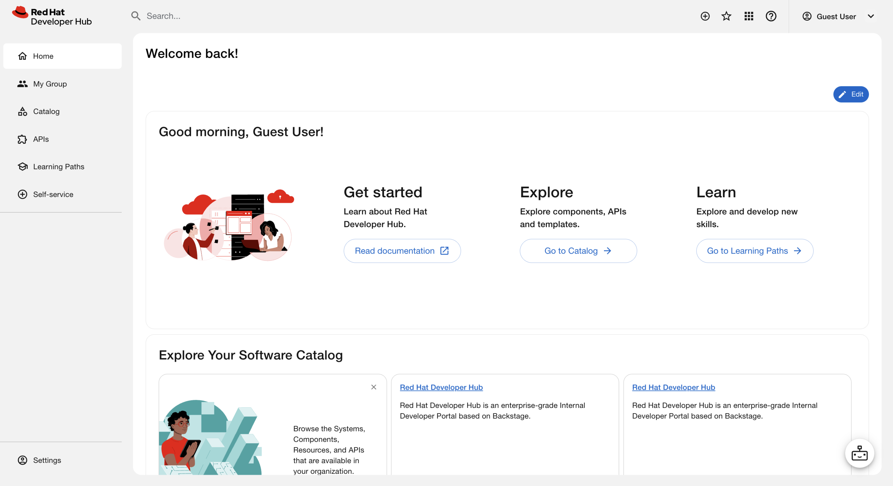
Chapter 2. Red Hat Developer Lightspeed for Red Hat Developer Hub architecture for your AI backend deployment
Review the Developer Lightspeed for RHDH component architecture to plan your system layout and coordinate connections with your artificial intelligence (AI) backend deployment.
The architecture relies on the Lightspeed Core Service (LCORE) container, which operates as the primary intermediary layer to manage Developer Lightspeed for RHDH functionality and console user interactions. After you enable the plugin, the interface appears as the Intelligent Assistant button on all platforms that host RHDH.
Additional resources
2.1. AI reference and tool-calling capabilities through Lightspeed Core Service
Review the core components managed by the Lightspeed Core Service(LCORE) sidecar container to plan integrations with large language models (LLM) and tool runtime providers.
The LCORE container deploys as a sidecar to extend RHDH functionality. The container integrates and manages the following core architectural components:
- Large language model (LLM) inference providers
Model Context Protocol (MCP) or Retrieval Augmented Generation (RAG) tool runtime providers
ImportantVerify that your model supports tool calling before you enable MCP features. Using an incompatible model results in error messages.
- Safety providers
- Vector database settings
LCORE also manages critical operational configuration and key data, specifically:
- User feedback collection
- MCP server configuration
- Chat history
Developer Lightspeed for RHDH sends prompts and receives LLM responses through the LCORE sidecar.
Chapter 3. Retrieval augmented generation (RAG) embeddings for grounded AI responses
Use retrieval-augmented generation (RAG) embeddings to ground artificial intelligence (AI) responses in your internal documentation and provide verified citations during user interactions.
The RHDH documentation serves as the primary data source for RAG operations. To provide accurate citations to production documentation during inference, the system uses RAG embeddings stored within a vector database.
The system processes RAG data through the following sequence:
- An initialization container copies the RAG data to a shared volume.
- The Lightspeed Core Service (LCORE) sidecar container mounts the shared volume to access the data.
- The sidecar layer uses the embeddings to attach precise documentation references to the chat responses.
Chapter 4. Configure Developer Lightspeed for RHDH to initialize the AI assistant
Red Hat Developer Lightspeed for Red Hat Developer Hub is enabled by default on Red Hat Developer Hub (RHDH) instances. To provide developers with chat assistance, configure your deployment settings by using either the Operator or the Helm chart.
4.1. Configure the virtual assistant components
Configure Developer Lightspeed for RHDH by updating your Backstage custom resource (CR) to map environment variables, manage configurations, and set access rights.
Prerequisites
- The RHDH Operator is installed on your cluster.
- You have cluster administrator privileges.
Procedure
Create an opaque Kubernetes Secret containing your operational credentials and query safety guardrails before applying the Backstage CR. Refer to the following key definitions for required environment variables:
ImportantTo disable an inference provider or configuration feature, you must leave the corresponding
ENABLE_*variable completely unset. Setting anENABLE_*variable tofalsedoes not disable the component because the underlying system checks only whether the variable is defined.Key Description ENABLE_VLLMEnables the vLLM platform when set to
"true".VLLM_URLSpecifies the target API endpoint URL for vLLM (for example,
https://<api_endpoint>/v1).VLLM_API_KEYStores the authorization token for your vLLM platform.
ENABLE_OPENAIEnables the OpenAI platform when set to
"true".OPENAI_API_KEYStores the authorization secret key for OpenAI.
ENABLE_OLLAMAEnables the Ollama platform when set to
"true".OLLAMA_URLSpecifies the target endpoint URL for Ollama.
ENABLE_VERTEX_AIEnables the Vertex AI platform when set to
"true".VERTEX_AI_PROJECTSpecifies your Google Cloud project ID.
VERTEX_AI_LOCATIONSpecifies your target Google Cloud region.
GOOGLE_APPLICATION_CREDENTIALSSpecifies the file path of your mounted Google Cloud service account credentials JSON file.
ENABLE_VALIDATIONActivates query safety validation guardrails when set to
"true".VALIDATION_PROVIDERDefines the active provider managing the verification routines (for example,
openaiorvllm).VALIDATION_MODEL_NAMESpecifies the exact verification model to use (for example,
gpt-4o-mini).The following code shows an example configuration Secret for vLLM with validation:
apiVersion: v1 kind: Secret metadata: name: lightspeed-auth-secrets type: Opaque stringData: ENABLE_VLLM: "true" VLLM_URL: "https://<api_endpoint>/v1" VLLM_API_KEY: "<api_key>" ENABLE_VALIDATION: "true" VALIDATION_PROVIDER: "vllm" VALIDATION_MODEL_NAME: "llama3.1"
Map your secret inside the
extraEnvssection of the Backstage CR to complete container provisioning:apiVersion: rhdh.redhat.com/v1alpha5 kind: Backstage metadata: name: lightspeed-rhdh spec: application: extraEnvs: secrets: - name: lightspeed-auth-secrets containers: - lightspeed-coreOptional: To protect settings such as Model Context Protocol (MCP) server additions from being overwritten during reconciliation loops, define a custom ConfigMap mapping in the
extraFilessection of the CR:extraFiles: configMaps: - name: "my-custom-config" mountPath: /app-root key: lightspeed-stack.yaml containers: - lightspeed-coreConfigure access rights by updating the RBAC policy inside your Backstage CR:
To grant non-administrator teams access to the virtual assistant, append permission lines to the
rbac-policies.csvsection, replacing<team>with your target team name:p, role:default/<team>, intelligent-assistant.chat, use, allow 1
- 1
- Grants full use of the Developer Lightspeed for RHDH chat feature, including opening the chat window, sending messages, and managing chat history.
For the complete list of AI feature permissions, including Notebooks, MCP tools, and skills, see AI feature permissions.
Apply the updated custom resource manifest to your cluster:
$ oc apply -f <backstage_cr_file>.yaml
Verification
- Log in to your console instance.
- Verify that the Intelligent Assistant button appears on the home page.
- Select the Intelligent Assistant button and confirm that the chat window initializes successfully.
4.2. Configure Developer Lightspeed for RHDH by using the Helm chart
Configure Developer Lightspeed for RHDH by using the Helm chart to manage large language model (LLM) providers, enable validation guardrails, and authorize custom role-based access control (RBAC) policies.
Prerequisites
- You have access to a running RHDH instance deployed with Helm.
- You have operational credentials for your chosen LLM provider.
Procedure
Create a manual Kubernetes Secret to store your provider credentials by adding the required keys to your Secret based on your provider requirements:
ImportantTo disable an inference provider or configuration feature, you must leave the corresponding
ENABLE_*variable completely unset. Setting anENABLE_*variable tofalsedoes not disable the component because the underlying system checks only whether the variable is defined.Key Description ENABLE_VLLMEnables the vLLM platform when set to
"true".VLLM_URLSpecifies the target API endpoint URL for vLLM (for example,
https://<api_endpoint>/v1).VLLM_API_KEYStores the authorization token for your vLLM platform.
ENABLE_OPENAIEnables the OpenAI platform when set to
"true".OPENAI_API_KEYStores the authorization secret key for OpenAI.
ENABLE_OLLAMAEnables the Ollama platform when set to
"true".OLLAMA_URLSpecifies the target endpoint URL for Ollama.
ENABLE_VERTEX_AIEnables the Vertex AI platform when set to
"true".VERTEX_AI_PROJECTSpecifies your Google Cloud project ID.
VERTEX_AI_LOCATIONSpecifies your target Google Cloud region.
GOOGLE_APPLICATION_CREDENTIALSSpecifies the file path of your mounted Google Cloud service account credentials JSON file.
ENABLE_VALIDATIONActivates query safety validation guardrails when set to
"true".VALIDATION_PROVIDERDefines the active provider managing the verification routines (for example,
openaiorvllm).VALIDATION_MODEL_NAMESpecifies the exact verification model to use (for example,
gpt-4o-mini).Note-
By default, the Helm installation creates a temporary Kubernetes Secret containing keys for various LLM providers. On subsequent
helm upgradecycles, the system overwrites this default Secret. Create a manual Kubernetes Secret to persist your credentials. - Vertex AI requires custom architecture mapping and has received limited testing.
TipTo filter and reject off-topic user queries, you can optionally configure query safety validation guardrails within this Secret by defining the
ENABLE_VALIDATION,VALIDATION_PROVIDER, andVALIDATION_MODEL_NAMEkeys.-
By default, the Helm installation creates a temporary Kubernetes Secret containing keys for various LLM providers. On subsequent
Reference your manual secret inside the
values.yamlfile:global: lightspeed: secret: create: false name: "my-custom-secret"Optional: Configuration files such as
lightspeed-stack.yaml,config.yamlandrhdh-profile.pyare managed by the Helm deployment and overwrites changes onHelm upgraderuns. To protect changes to a file, create a custom config map and reference it in thevalues.yamlfile:ImportantOnly modify the
createandnameOverridefields. Keep the default mount paths and file configurations unchanged.global: lightspeed: configMaps: - name: stack create: false nameOverride: "my-custom-stack" mountPath: /app-root/lightspeed-stack.yaml subPath: lightspeed-stack.yaml sourceFile: lightspeed-stack.yaml optional: falseConfigure access rights by updating your RBAC definitions:
To grant non-administrator teams access to the virtual assistant, append permission lines to the
rbac-policies.csvsection, replacing<team>with your target team name:p, role:default/<team>, intelligent-assistant.chat, use, allow 1
- 1
- Grants full use of the Developer Lightspeed for RHDH chat feature, including opening the chat window, sending messages, and managing chat history.
For the complete list of AI feature permissions, including Notebooks, MCP tools, and skills, see AI feature permissions.
-
Run the
helm upgradecommand to apply your configurations to the cluster.
Verification
- Log in to your console instance.
- Verify that the Intelligent Assistant button appears on the home page.
- Select the Intelligent Assistant button and confirm that the chat window initializes successfully.
4.3. Disable Developer Lightspeed for RHDH by using the Operator
Disable the Developer Lightspeed for RHDH chat interface and stop associated container processes to remove the service from your Operator-backed deployment.
Prerequisites
- You have access to the cluster where your instance is deployed.
- You have cluster administrator privileges.
Procedure
- Open your Backstage custom resource (CR) YAML file.
In the
specsection, set theenabledflag tofalsefor thelightspeedflavour. This disables the chat interface and prevents the Operator from injecting unconfigured sidecar containers:apiVersion: rhdh.redhat.com/v1alpha5 kind: Backstage metadata: name: lightspeed-disabled spec: flavours: - name: lightspeed enabled: falseApply the updated custom resource manifest to your cluster:
oc apply -f <backstage_cr_file>.yaml
Verification
- Log in to your console instance.
- Verify that the Intelligent Assistant button no longer appears on the home page.
4.4. Disable Developer Lightspeed for RHDH by using the Helm chart
Disable the Developer Lightspeed for RHDH chat interface and stop associated container processes to remove the service from your Helm-deployed environment.
Prerequisites
- You have access to the cluster where your instance is deployed.
- You have cluster administrator privileges.
Procedure
-
Open your Helm
values.yamlfile. Update the
global.lightspeed.enabledparameter tofalseto disable the chat interface:global: lightspeed: enabled: false-
Run the
helm upgradecommand to apply the configuration change to your cluster.
Verification
- Log in to your console instance.
- Verify that the Intelligent Assistant button no longer appears on the home page.
4.5. Mirror Developer Lightspeed for RHDH images for air-gapped environments
To provide chat assistance in a network environment without internet access, you must mirror the required Developer Lightspeed for RHDH container images and dynamic plugins to your local registry. This ensures your secure environment can pull the necessary components inside your network perimeter.
4.5.1. Mirror Lightspeed images for air-gapped environments
Mirror the required Developer Lightspeed for RHDH container images and plugins to your local registry to provide chat assistance in an air-gapped environment.
The prepare-restricted-environment.sh script does not automatically parse Developer Lightspeed for RHDH images from the bundle manifest, so mirror these images manually before running the script.
Prerequisites
- You have a target mirror registry accessible to your disconnected cluster.
- You authenticated to the Red Hat Container Registry and your target mirror registry.
-
You have configured image pull authentication for your mirror registry as described in Install Red Hat Developer Hub in an air-gapped environment with the Operator. The
kubeletrequires these credentials to pull all Red Hat Developer Hub container images, including the Developer Lightspeed for RHDH sidecar images.
Procedure
Extract the deployment configurations from the official Operator bundle:
BUNDLE_IMAGE="registry.redhat.io/rhdh/rhdh-operator-bundle:1.10" CONTAINER_ID=$(podman create "${BUNDLE_IMAGE}") podman cp $CONTAINER_ID:/manifests/rhdh-flavour-lightspeed-config_v1_configmap.yaml ./lightspeed-config.yaml podman rm $CONTAINER_IDIdentify the initialization and sidecar container image tags from the extracted configuration file:
LS_RAG_IMAGE=$(yq '.data["deployment.yaml"]' lightspeed-config.yaml | yq '.spec.template.spec.initContainers[] | select(.name == "init-rag-data") | .image') LS_CORE_IMAGE=$(yq '.data["deployment.yaml"]' lightspeed-config.yaml | yq '.spec.template.spec.containers[] | select(.name == "lightspeed-core") | .image')
Mirror the images to your internal registry by running the
skopeo copycommand:skopeo copy docker://${LS_RAG_IMAGE} docker://<mirror_registry>/<ls_rag_repo>@<digest> skopeo copy docker://${LS_CORE_IMAGE} docker://<mirror_registry>/<ls_core_repo>@<digest>
4.5.2. Mirror Developer Lightspeed for RHDH images for Helm deployments on OpenShift Container Platform
Mirror the required Developer Lightspeed for RHDH container images to your local registry by using the oc-mirror plugin when deploying the Helm chart on an OpenShift Container Platform cluster.
Prerequisites
- You have a target mirror registry accessible to your disconnected OpenShift Container Platform cluster.
- You authenticated to the Red Hat Container Registry and your target mirror registry.
-
You have configured image pull authentication for your mirror registry as described in Install Red Hat Developer Hub on OpenShift Container Platform in an air-gapped environment with the Helm chart. The
kubeletrequires these credentials to pull all Red Hat Developer Hub container images, including the Developer Lightspeed for RHDH sidecar images.
Procedure
Identify the initialization and sidecar container images from the default values file of the chart:
helm show values redhat-developer-hub --repo https://charts.openshift.io/ --version 1.10.1 > values.default.yaml LS_RAG_IMAGE=$(yq '.global.lightspeed.initContainer.image | .registry + "/" + .repository' values.default.yaml) LS_RAG_DIGEST=$(yq '.global.lightspeed.initContainer.image.tag' values.default.yaml) LS_CORE_IMAGE=$(yq '.global.lightspeed.sidecar.image | .registry + "/" + .repository' values.default.yaml) LS_CORE_DIGEST=$(yq '.global.lightspeed.sidecar.image.tag' values.default.yaml)
Add these images to the
additionalImagessection of yourImageSetConfigurationfile:apiVersion: mirror.openshift.io/v2alpha1 kind: ImageSetConfiguration mirror: additionalImages: - name: ${LS_RAG_IMAGE}:${LS_RAG_DIGEST} - name: ${LS_CORE_IMAGE}:${LS_CORE_DIGEST} helm: repositories: - name: openshift-charts url: https://charts.openshift.io charts: - name: redhat-developer-hub version: "1.10"
4.5.3. Mirror Developer Lightspeed for RHDH images for Helm deployments on Kubernetes
Isolate image references, copy them manually to your internal registry, and update your configuration file when deploying the Helm chart on non-OpenShift platforms.
Prerequisites
- You have a target mirror registry accessible to your disconnected cluster.
- You authenticated to the Red Hat Container Registry and your target mirror registry.
-
You have configured image pull authentication for your mirror registry as described in Install Red Hat Developer Hub on a supported Kubernetes platform in an air-gapped environment with the Helm chart. The
kubeletrequires these credentials to pull all Red Hat Developer Hub container images, including the Developer Lightspeed for RHDH sidecar images.
Procedure
Extract the image references from the default values file of the chart:
$ helm show values redhat-developer-hub --repo https://charts.openshift.io/ --version 1.10.1 > values.default.yaml LS_RAG_IMAGE=$(yq '.global.lightspeed.initContainer.image | .registry + "/" + .repository' values.default.yaml) LS_RAG_DIGEST=$(yq '.global.lightspeed.initContainer.image.tag' values.default.yaml) LS_CORE_IMAGE=$(yq '.global.lightspeed.sidecar.image | .registry + "/" + .repository' values.default.yaml) LS_CORE_DIGEST=$(yq '.global.lightspeed.sidecar.image.tag' values.default.yaml)
Mirror the images to your internal mirror registry:
skopeo copy --all docker://${LS_RAG_IMAGE}:${LS_RAG_DIGEST} docker://<mirror_registry_name>/<ls_rag_repo_name>:${LS_RAG_DIGEST} skopeo copy --all docker://${LS_CORE_IMAGE}:${LS_CORE_DIGEST} docker://<mirror_registry_name>/<ls_core_repo_name>:${LS_CORE_DIGEST}Update your custom Helm values file with the mirrored registry locations and plugin references. Mirror the dynamic plugins to the local registry before you add their package paths to the file. For mirroring instructions, see Mirroring Red Hat Developer Hub dynamic plugins in disconnected environments:
global: lightspeed: initContainer: image: registry: "<mirror_registry_name>" repository: <ls_rag_repo_name> tag: "${LS_RAG_DIGEST}" sidecar: image: registry: "<mirror_registry_name>" repository: <ls_core_repo_name> tag: "${LS_CORE_DIGEST}" plugins: - package: "oci://<mirror_registry_name>/rhdh/red-hat-developer-hub-backstage-plugin-lightspeed@<ls_frontend_digest>" disabled: false - package: "oci://<mirror_registry_name>/rhdh/red-hat-developer-hub-backstage-plugin-lightspeed-backend@<ls_backend_digest>" disabled: false
Additional resources
Chapter 5. AI feature permissions
To control who can use each Developer Lightspeed for RHDH AI feature, assign the feature-linked RBAC permissions that grant access to the chat, Notebooks, MCP tools, and skills.
Each feature uses a single permission that grants full access of that feature. Permissions do not separate create, read, update, and delete actions: a role either has full permission to use a feature or no access. All AI feature permissions use the use action.
| Permission | What it grants |
|---|---|
|
|
Use the Developer Lightspeed for RHDH chat feature, including opening the chat window, sending messages, and managing chat history. |
|
|
Use the Developer Lightspeed for RHDH Notebooks feature, including listing, reading, creating, uploading, querying, updating, and deleting Notebooks. |
|
|
Use the Model Context Protocol (MCP) tools, including listing MCP servers and managing their configuration. |
|
|
Use the Developer Lightspeed for RHDH skills feature. |
Example RBAC policy
The following example grants a team full access to all Developer Lightspeed for RHDH AI features:
p, role:default/<team>, intelligent-assistant.chat, use, allow p, role:default/<team>, intelligent-assistant.notebooks, use, allow p, role:default/<team>, intelligent-assistant.mcp.tools, use, allow p, role:default/<team>, intelligent-assistant.skills, use, allow
To grant access to a subset of features, include permissions for only those features.
Migration from previous permission names
If you are upgrading from Developer Hub 1.x, replace the previous lightspeed.* permission names with the feature-linked names. Developer Hub 2.1 grants each feature with a single permission and no longer uses individual action verbs such as create, read, update, or delete.
| Previous permissions (1.x) | New permission (2.1) |
|---|---|
|
|
|
|
|
|
|
|
|
This is a breaking change. Developer Hub 2.1 does not support the previous permission names. You must update all RBAC policies, conditional rules, and automation scripts that reference the previous lightspeed.* permission identifiers before you upgrade.
Chapter 6. Extend Developer Hub intelligent assistant with Bring Your Own Knowledge (BYOK)
Add your organization’s internal documentation as a retrieval-augmented generation (RAG) knowledge source so that Developer Hub intelligent assistant can search and cite your content alongside the default Red Hat Developer Hub (RHDH) product documentation.
6.1. Bring Your Own Knowledge (BYOK) for Developer Hub intelligent assistant
Bring Your Own Knowledge (BYOK) enables Developer Hub intelligent assistant to retrieve information from documentation that your organization provides. An administrator generates an OGX vector store from source documents and registers it as a retrieval source.
By default, Developer Hub intelligent assistant grounds AI responses in Red Hat Developer Hub (RHDH) product documentation. With BYOK, you can add additional knowledge sources — such as internal runbooks, architecture guides, or custom API references — so that Developer Hub intelligent assistant can retrieve and cite content that is specific to your organization.
This workflow is intended for RHDH administrators. The upstream rag-content README is the source of truth for supported vector-store generation commands and current prerequisites. See the additional resources.
6.1.1. How BYOK works
The BYOK workflow has four parts:
- Prepare source documents and citation metadata.
-
Generate embeddings and an OGX vector store with
rag-content. - Deliver the vector database and, when required, a local embedding model to the Developer Hub intelligent assistant runtime.
- Register the store as a retrieval source and verify it through the Developer Hub intelligent assistant.
The embedding model and dimension used to generate the database must match the model and dimension in the runtime configuration. A mismatch prevents reliable retrieval and can stop the vector store from loading.
6.1.2. Retrieval source ordering and prioritization
The order of entries under rag.retrieval.inline.sources or rag.retrieval.tool.sources does not assign priority to the vector stores. For example, listing custom-docs before okp does not guarantee that content from custom-docs is returned first.
Developer Hub intelligent assistant supports per-store BYOK weighting only with Inline RAG. Set score_multiplier on each entry under rag.byok.stores to adjust its relative importance. Values greater than 1.0 boost that store’s results, while values less than 1.0 reduce them.
Inline RAG queries the configured BYOK stores, multiplies each raw relevance score by that store’s score_multiplier, merges the results, and ranks them by weighted score. Consequently, a store with a higher score_multiplier receives a boost regardless of where it appears in the sources list.
Tool RAG does not apply score_multiplier. It exposes the configured stores through the file_search tool. OGX searches them, merges their chunks, and ranks the combined results by the scores returned by the stores. Use Tool RAG when the model should decide when to search. Use Inline RAG when every request must retrieve context and you require configurable BYOK store weighting.
score_multiplier applies only to BYOK stores. It does not weight OKP results, whose scores use a different scoring system. When you combine BYOK and OKP through Inline RAG, enable the supported reranker to normalize and rerank results across those sources.
Additional resources
6.2. Prepare the source documents for BYOK RAG
Organize the documents that you want Developer Hub intelligent assistant to search into a directory, and add citation metadata before you generate the vector store.
The examples in this workflow use Markdown documents, an OGX FAISS store, and the sentence-transformers/all-mpnet-base-v2 embedding model. This model produces embeddings with dimension 768.
Prerequisites
-
You have a workstation with Git and
uvinstalled, or a container runtime such as Podman. - You have access to the lightspeed-core rag-content repository.
- You have source documents that you are authorized to use.
- You have access to a container registry or another approved method of delivering files to your RHDH deployment.
-
You have a Developer Hub intelligent assistant deployment configured with the
sentence_transformersinference provider. - You have network access to download the embedding model from Hugging Face, unless the model is supplied locally.
Procedure
Create a directory for the documents that you want the assistant to search. For example:
custom_docs/ installation-guide.md operations-guide.md
Use clear headings and ordinary text wherever possible. Text embedded only in screenshots or scanned PDF pages must be converted with optical character recognition before it can be indexed reliably.
-
Process one document type per generation run and set
--doc-typeaccordingly. This example usesmarkdown. For Markdown content, add YAML frontmatter to identify the document and its canonical source URL:
--- title: Example Operations Guide url: https://docs.example.com/operations-guide --- # Example Operations Guide Document content begins here.
The metadata is stored with each generated chunk. Developer Hub intelligent assistant can use the title and URL when presenting retrieval sources and citations.
ImportantDo not include secrets, credentials, personal data, or content that users of the assistant are not authorized to retrieve. Access controls on the source system are not automatically reproduced inside a vector store.
Next steps
6.3. Generate a vector database for BYOK RAG
Install the rag-content tooling, generate a portable OGX FAISS vector store from your custom documentation, and test retrieval before you deploy the store to Developer Hub intelligent assistant.
Prerequisites
- You have prepared your content directory as described in Prepare the source documents for BYOK RAG.
-
You have a workstation with Git and
uvinstalled.
Procedure
Clone the
rag-contentrepository and install its pinned dependencies:$ git clone https://github.com/lightspeed-core/rag-content.git $ cd rag-content $ uv sync
TipUse a specific release or commit in repeatable production workflows. The generator, query helper, and runtime dependencies must be kept compatible.
From the
rag-contentrepository, generate a portable OGX FAISS vector store:$ uv run python scripts/generate_embeddings.py \ --folder /path/to/custom_docs \ --output /path/to/vector_db/custom_docs \ --index custom-docs \ --vector-store llamastack-faiss \ --model-dir "" \ --model-name sentence-transformers/all-mpnet-base-v2 \ --doc-type markdown \ --chunk-size 512 \ --chunk-overlap 128
The
llamastack-faissvalue is retained as a compatibility name in therag-contentcommand-line interface. Currentrag-contentreleases use OGX to create this store.Passing an empty value to
--model-dirrecords the Hugging Face model ID rather than a workstation-specific model path. This makes the generated store portable. At runtime, the same model ID is resolved by thesentence_transformersprovider.NoteThis model-ID configuration can require network access when the model is not already cached. For a disconnected deployment, package the embedding model and configure its runtime filesystem path as described in Deploy BYOK RAG in a disconnected environment.
Confirm the output files. The output directory contains:
-
faiss_store.db: the vector database required at runtime. -
lightspeed-stack.yaml: an example Developer Hub intelligent assistant configuration generated for the store. -
llama-stack.yaml: the OGX configuration used to create the store.
-
Read the unique vector-store ID from the generated configuration:
$ yq '.registered_resources.vector_stores[0].vector_store_id' \ /path/to/vector_db/custom_docs/llama-stack.yaml
Save this value. The runtime configuration must use the exact same ID.
Test retrieval before deployment by using the query helper from the same
rag-contentcheckout:$ uv run python scripts/query_rag.py \ --db-path /path/to/vector_db/custom_docs \ --product-index custom-docs \ --model-path "" \ --top-k 5 \ --query "Enter a question answered only by the custom documents" \ --json
Review the returned chunks, scores, titles, and source URLs. Use a question that contains a distinctive fact from the custom content so that the result is easy to distinguish from general model knowledge.
NoteSome combinations of OGX and
rag-contentcan report that the vector store is already registered whenquery_rag.pyopens a newly generated database. Do not edit the SQLite database manually. Use a compatiblerag-contentrevision or continue validation through the deployed Developer Hub intelligent assistant vector-store API, and report reproducible helper failures to therag-contentproject.
Next steps
6.4. Package a BYOK RAG container image
Bundle your generated vector store into a container image so that it can be delivered to your Red Hat Developer Hub (RHDH) cluster and copied into the Developer Hub intelligent assistant runtime by an init container.
The RHDH deployment can use an init container to copy the database from the image into a shared volume that the Developer Hub intelligent assistant container mounts. Persistent volumes, configuration-management systems, or other organization-approved delivery mechanisms can also be used.
Prerequisites
- You have generated a portable OGX FAISS vector store as described in Generate a vector database for BYOK RAG.
-
You have
podmaninstalled. - You have write access to a container registry accessible to your cluster.
Procedure
Create a
Containerfilein the directory that contains yourvector_dboutput:FROM registry.access.redhat.com/ubi9-micro:latest COPY vector_db /byok/vector_db USER 1001
Build the image:
$ podman build --platform linux/amd64 \ -t quay.io/your-organization/rhdh-byok:1.0.0 .
Push the image to an approved registry:
$ podman push quay.io/your-organization/rhdh-byok:1.0.0
ImportantUse an immutable version tag or image digest in production. Ensure that the image architecture matches the OpenShift worker architecture.
-
Note the final path visible inside the Developer Hub intelligent assistant container. The
db_pathconfiguration must match that runtime path exactly. For example, if the database is copied to/rag-content/vector_db/custom_docs/faiss_store.db, use that complete path in the Developer Hub intelligent assistant configuration.
6.5. Configure BYOK RAG by using the Helm chart
Deploy your BYOK container image as an init container and register the custom knowledge source in lightspeed-stack.yaml in your Helm-based Red Hat Developer Hub (RHDH) deployment.
Prerequisites
- You have packaged your vector store as a container image as described in Package a BYOK RAG container image.
-
You have the generated
vector_db_idvalue from Generate a vector database for BYOK RAG. - You have access to a running RHDH instance deployed with the Helm chart.
- The BYOK container image is accessible from your cluster.
Procedure
Create a
ConfigMapthat contains the completelightspeed-stack.yamlfor your RHDH version with the BYOK sections added. Start from the product-provided configuration, then add thesentence_transformersembedding provider, register the store underrag.byok.stores, and activate it underrag.retrieval:WarningThe mounted file replaces the product-provided
lightspeed-stack.yamlin its entirety; it is not merged. If you include only the BYOK sections, you remove other supported or required settings, including the service, authentication, cache, user-data and profile, MCP, and other product configuration, and Developer Hub intelligent assistant can fail to start or lose required functionality. Always copy the complete configuration for your RHDH version and add the BYOK sections to it.apiVersion: v1 kind: ConfigMap metadata: name: lightspeed-stack-byok data: lightspeed-stack.yaml: | # Retain the complete product-provided configuration for your RHDH version # (service, authentication, cache, profile, MCP, and other settings), then add the # following BYOK sections to it: inference: providers: - type: sentence_transformers rag: byok: stores: - rag_id: custom-docs 1 backend: faiss embedding_model: sentence-transformers/all-mpnet-base-v2 embedding_dimension: 768 vector_db_id: vs_replace_with_generated_id 2 db_path: /rag-content/vector_db/custom_docs/faiss_store.db 3 score_multiplier: 1.0 # Used by Inline RAG only retrieval: tool: sources: - custom-docs 4- <1>
The
rag_ididentifies the retrieval source. Use the same value underrag.retrieval.tool.sources.- 1
- Replace with the
vector_db_idvalue that you read from the generatedllama-stack.yamlfile. The runtime configuration must use the exact same ID. - 2
- Must match the path where the init container copies the database inside the Developer Hub intelligent assistant container.
- 3
- Must match
rag_id. If you have other sources, such as product documentation, list each required source undersources.
Apply the
ConfigMapto your cluster:$ kubectl apply -f lightspeed-stack-byok-configmap.yaml
Update your Helm
values.yamlfile to reference the customConfigMapand override the Developer Hub intelligent assistant init container so that it delivers your BYOK vector store. The chart mounts the RAG volume (global.lightspeed.ragVolume) automatically into both the init container and the Developer Hub intelligent assistant container at/rag-content, so you do not define extra volumes or volume mounts:global: lightspeed: configMaps: - name: stack create: false nameOverride: "lightspeed-stack-byok" 1 mountPath: /app-root/lightspeed-stack.yaml subPath: lightspeed-stack.yaml sourceFile: lightspeed-stack.yaml optional: false initContainer: 2 image: quay.io/your-organization/rhdh-byok:1.0.0 command: ["/bin/sh", "-c"] args: - | set -eu mkdir -p /rag-content/vector_db cp -R /byok/vector_db/. /rag-content/vector_db/ImportantThe chart exposes a single
global.lightspeed.initContainer. Overriding it replaces the default init container that delivers the product-provided RAG content. To preserve that content, build your BYOK image from the product RAG init image so that the overridden init container delivers both the product-provided content and your BYOK vector store. Validate the result against your chart version before relying on it in production.- <1>
Replace the default
lightspeed-stack.yamlConfigMapwith your custom one that contains the BYOK configuration.- 1
- Override the default init container so that it copies the BYOK vector database into the automatically mounted
/rag-contentRAG volume before Developer Hub intelligent assistant starts.
Run
helm upgradeto apply the changes:$ helm upgrade <release-name> redhat-developer-hub \ --repo https://charts.openshift.io/ \ --version 1.10.1 \ -f values.yaml
Verification
Additional resources
6.6. Configure BYOK RAG by using the Operator
Deploy your BYOK container image as an init container and register the custom knowledge source in lightspeed-stack.yaml in your Operator-based Red Hat Developer Hub (RHDH) deployment.
Prerequisites
- You have packaged your vector store as a container image as described in Package a BYOK RAG container image.
-
You have the generated
vector_db_idvalue from Generate a vector database for BYOK RAG. - The RHDH Operator is installed on your cluster.
- You have cluster administrator privileges.
- The BYOK container image is accessible from your cluster.
Procedure
Create a
ConfigMapthat contains the completelightspeed-stack.yamlfor your RHDH version with the BYOK sections added. Start from the product-provided configuration, then add thesentence_transformersembedding provider, register the store underrag.byok.stores, and activate it underrag.retrieval:WarningThe mounted file replaces the product-provided
lightspeed-stack.yamlin its entirety; it is not merged. If you include only the BYOK sections, you remove other supported or required settings, including the service, authentication, cache, user-data and profile, MCP, and other product configuration, and Developer Hub intelligent assistant can fail to start or lose required functionality. Always copy the complete configuration for your RHDH version and add the BYOK sections to it.apiVersion: v1 kind: ConfigMap metadata: name: lightspeed-stack-byok data: lightspeed-stack.yaml: | # Retain the complete product-provided configuration for your RHDH version # (service, authentication, cache, profile, MCP, and other settings), then add the # following BYOK sections to it: inference: providers: - type: sentence_transformers rag: byok: stores: - rag_id: custom-docs 1 backend: faiss embedding_model: sentence-transformers/all-mpnet-base-v2 embedding_dimension: 768 vector_db_id: vs_replace_with_generated_id 2 db_path: /rag-content-byok/vector_db/custom_docs/faiss_store.db 3 score_multiplier: 1.0 # Used by Inline RAG only retrieval: tool: sources: - custom-docs 4- <1>
The
rag_ididentifies the retrieval source. Use the same value underrag.retrieval.tool.sources.- 1
- Replace with the
vector_db_idvalue that you read from the generatedllama-stack.yamlfile. The runtime configuration must use the exact same ID. - 2
- Must match the path where the init container copies the database inside the Developer Hub intelligent assistant container. This procedure uses the dedicated
/rag-content-byokmount path so that the BYOK content does not shadow the product-provided content that the default init container delivers to/rag-content. - 3
- Must match
rag_id. If you have other sources, such as product documentation, list each required source undersources.
Apply the
ConfigMapto your cluster:$ oc apply -f lightspeed-stack-byok-configmap.yaml
Update your
Backstagecustom resource (CR) to mount the customConfigMap, and usespec.deployment.patchto add the BYOK init container, shared volume, and volume mount. The Operator appliesspec.deployment.patchas a strategic merge patch, so the BYOK init container is added alongside the product init container and the product-provided RAG content in/rag-contentis preserved:apiVersion: rhdh.redhat.com/v1alpha5 kind: Backstage metadata: name: lightspeed-rhdh spec: application: extraFiles: configMaps: - name: "lightspeed-stack-byok" 1 mountPath: /app-root key: lightspeed-stack.yaml containers: - lightspeed-core deployment: patch: spec: template: spec: volumes: - name: byok-rag emptyDir: {} initContainers: - name: byok-rag-init 2 image: quay.io/your-organization/rhdh-byok:1.0.0 command: ["/bin/sh", "-c"] args: - | set -eu mkdir -p /rag-content-byok/vector_db cp -R /byok/vector_db/. /rag-content-byok/vector_db/ volumeMounts: - name: byok-rag mountPath: /rag-content-byok containers: - name: lightspeed-core volumeMounts: - name: byok-rag mountPath: /rag-content-byok- <1>
References the
ConfigMapcreated in the previous step. This replaces the defaultlightspeed-stack.yamlfor thelightspeed-corecontainer.- 1
- The init container runs before Developer Hub intelligent assistant starts and copies the vector database to the shared
byok-ragvolume. The dedicated/rag-content-byokmount path avoids shadowing the product-provided content that the default init container delivers to/rag-content.
Apply the updated
BackstageCR:$ oc apply -f <backstage_cr_file>.yaml
Verification
Additional resources
6.7. Deploy BYOK RAG in a disconnected environment
Package the embedding model alongside the vector store and register the store with local runtime paths so that Developer Hub intelligent assistant can retrieve custom content without network access to Hugging Face.
A precomputed FAISS database contains the document embeddings, but Developer Hub intelligent assistant must still embed each incoming question before it can search that database. The runtime therefore requires the same embedding model and dimension that were used to generate the store. Supplying only faiss_store.db is not sufficient for a disconnected deployment.
The rag-content project provides a model-download helper and also bundles its default embedding model in its RAG tool image. The following upstream references are pinned to a specific revision so that the examples do not change unexpectedly:
Prerequisites
- You have generated a portable OGX FAISS vector store as described in Generate a vector database for BYOK RAG.
-
You have a connected build workstation that uses the same pinned
rag-contentcheckout used to generate the vector store. -
You have
podmaninstalled and a registry that is available to the disconnected OpenShift cluster.
Procedure
On a connected build workstation, download the embedding model:
$ mkdir -p embeddings_model $ uv run python scripts/download_embeddings_model.py \ --local-dir ./embeddings_model \ --hf-repo-id sentence-transformers/all-mpnet-base-v2
The resulting directory includes the model weights, tokenizer, configuration, pooling, and normalization files needed by the
sentence_transformersprovider. Scan and transfer this directory according to your organization’s disconnected-content process.NoteIf the vector store is generated in a disconnected build environment, pass the local directory to
--model-dirinstead of an empty value. In either case, use the exact same model weights for generation and runtime. Changing the model requires regenerating the vector store.Place the generated
vector_dbdirectory and downloadedembeddings_modeldirectory in the container build context:byok-image/ Containerfile vector_db/ custom_docs/ faiss_store.db embeddings_model/ model.safetensors config.json tokenizer.json ...Create an init-container image that contains both artifacts:
FROM registry.access.redhat.com/ubi9/ubi-minimal:latest COPY vector_db /byok/vector_db COPY embeddings_model /byok/embeddings_model RUN chgrp -R 0 /byok && chmod -R g=u /byok USER 1001
ImportantPin the base image and resulting BYOK image by digest in production. The image reference is part of the Kubernetes deployment configuration. It is not an alternative value for
db_pathorembedding_modelin the Developer Hub intelligent assistant BYOK configuration; those fields must identify paths visible inside the Developer Hub intelligent assistant container.Build the image on a connected system, scan it, and mirror it into a registry available to the disconnected OpenShift cluster:
$ podman build -t registry.example.com/rhdh/byok-content:1.0.0 . $ podman push registry.example.com/rhdh/byok-content:1.0.0
Create one volume, mount it in both the init container and the Developer Hub intelligent assistant container, and copy the artifacts into it before Developer Hub intelligent assistant starts. Apply the following pod wiring through the supported Helm chart or Operator customization mechanism for your RHDH installation:
spec: template: spec: volumes: - name: lightspeed-rag emptyDir: {} initContainers: - name: byok-rag-init image: registry.example.com/rhdh/byok-content@sha256:replace_with_digest command: ["/bin/sh", "-c"] args: - | set -eu mkdir -p /rag-content/vector_db /rag-content/embeddings_model cp -R /byok/vector_db/. /rag-content/vector_db/ cp -R /byok/embeddings_model/. /rag-content/embeddings_model/ volumeMounts: - name: lightspeed-rag mountPath: /rag-content securityContext: allowPrivilegeEscalation: false readOnlyRootFilesystem: true runAsNonRoot: true capabilities: drop: ["ALL"] containers: - name: lightspeed-core env: - name: HF_HUB_OFFLINE value: "1" - name: TRANSFORMERS_OFFLINE value: "1" volumeMounts: - name: lightspeed-rag mountPath: /rag-contentKubernetes init containers run before application containers, so the model and database are present when Developer Hub intelligent assistant starts.
NoteIf several init containers populate the same volume, give each vector store a unique directory and ensure that later containers merge content instead of replacing the entire
vector_dbdirectory.Register the disconnected store with local runtime paths:
rag: byok: stores: - rag_id: custom-docs backend: faiss embedding_model: /rag-content/embeddings_model 1 embedding_dimension: 768 vector_db_id: vs_replace_with_generated_id db_path: /rag-content/vector_db/custom_docs/faiss_store.db score_multiplier: 1.0 retrieval: tool: sources: - custom-docs- <1>
-
Using the local path prevents the
sentence_transformersprovider from attempting to resolvesentence-transformers/all-mpnet-base-v2from Hugging Face when the pod starts or processes its first query.
Verification
Additional resources
6.8. Verify the deployed vector store
Confirm that Developer Hub intelligent assistant can read the delivered artifacts, that the BYOK source is registered, and that the assistant retrieves and cites content from your custom documentation.
Prerequisites
- You have registered the store as described in Configure BYOK RAG by using the Helm chart, Configure BYOK RAG by using the Operator, or Deploy BYOK RAG in a disconnected environment.
- You have applied the configuration and restarted or rolled out the Developer Hub intelligent assistant workload so that it receives both the configuration and the database.
Procedure
Verify the following conditions after deployment:
- The init container or file-delivery process completes successfully.
-
The Developer Hub intelligent assistant container can read the configured
faiss_store.dbpath. -
For a disconnected deployment that uses a local embedding model, the Developer Hub intelligent assistant container can read the local embedding model files, including
model.safetensors, the tokenizer, and model configuration. A connected deployment that uses a Hugging Face model ID does not require these local files. - The Developer Hub intelligent assistant readiness endpoint reports success.
- The BYOK source appears in the RAG and vector-store API responses.
- The Developer Hub intelligent assistant answers a distinctive question from the custom documents and displays the expected source metadata.
From inside the Developer Hub intelligent assistant container, run the following example checks:
$ test -r /rag-content/vector_db/custom_docs/faiss_store.db $ curl --fail http://127.0.0.1:8080/readiness $ curl --fail http://127.0.0.1:8080/v1/rags $ curl --fail http://127.0.0.1:8080/v1/vector-stores
The exact host and port can differ depending on the installation. Protect administrative and diagnostic endpoints according to your organization’s security requirements.
NoteRun the following additional check only for a disconnected deployment that bundles a local embedding model. A connected deployment that uses a Hugging Face model ID, such as
sentence-transformers/all-mpnet-base-v2, does not require this file:$ test -r /rag-content/embeddings_model/model.safetensors
In the Developer Hub intelligent assistant, ask a question whose answer appears only in the custom content. Confirm both the answer and the cited title or URL.
NoteA plausible answer without the expected retrieval source does not prove that BYOK retrieval occurred.
Additional resources
6.9. Update the BYOK RAG knowledge base
Regenerate and redeploy the vector store when your source documents change. The FAISS database is a generated artifact, so you must rebuild it from the authoritative document set rather than editing it in place.
Prerequisites
- You have a deployed BYOK store as described in Verify the deployed vector store.
- You have access to the updated source documents.
Procedure
- Regenerate the complete store from the authoritative document set.
- Record the newly generated vector-store ID.
- Build and publish a new immutable image or artifact version.
-
Update the runtime
vector_db_id,db_pathwhen necessary, and image reference together. Roll out Developer Hub intelligent assistant and repeat the retrieval verification.
ImportantChanging the embedding model requires regenerating the vector store. Do not reuse a database generated with a different model or embedding dimension.
Verification
6.10. BYOK RAG configuration fields for lightspeed-stack.yaml
Reference the inference, rag.byok, and rag.retrieval fields available in lightspeed-stack.yaml to register and activate custom knowledge sources for Developer Hub intelligent assistant.
6.10.1. inference fields
The sentence_transformers inference provider embeds each incoming question before Developer Hub intelligent assistant searches the vector store.
inference:
providers:
- type: sentence_transformers6.10.2. rag.byok.stores list fields
Each entry in the rag.byok.stores list defines one custom knowledge source. You can define multiple sources.
| Field | Type | Required | Description |
|---|---|---|---|
|
|
String |
Yes |
Unique identifier for this knowledge source. Referenced under |
|
|
String |
Yes |
Vector store backend type. Use |
|
|
String |
Yes |
Hugging Face model ID for the embedding model, or a local path inside the Developer Hub intelligent assistant container for a disconnected deployment. Must match the model used during vector store generation. Default: |
|
|
Integer |
Yes |
Output dimension of the embedding model. For |
|
|
String |
Yes |
Unique store identifier generated during vector store creation. Read this value from the generated |
|
|
String |
Yes |
Absolute path to the |
|
|
Float |
No |
Relative weight applied to this store’s results with Inline RAG. Values greater than |
6.10.3. rag.retrieval fields
The rag.retrieval section activates configured BYOK sources and sets the retrieval mode.
| Field | Description |
|---|---|
|
|
List of |
|
|
List of |
6.10.4. Example: Single source
inference:
providers:
- type: sentence_transformers
rag:
byok:
stores:
- rag_id: custom-docs
backend: faiss
embedding_model: sentence-transformers/all-mpnet-base-v2
embedding_dimension: 768
vector_db_id: vs_replace_with_generated_id
db_path: /rag-content/vector_db/custom_docs/faiss_store.db
score_multiplier: 1.0 # Used by Inline RAG only
retrieval:
tool:
sources:
- custom-docs6.10.5. Example: Inline RAG with per-store weighting
rag:
byok:
stores:
- rag_id: general-docs
# Other required store settings are omitted for brevity.
score_multiplier: 1.0
- rag_id: preferred-docs
# Other required store settings are omitted for brevity.
score_multiplier: 1.2 1
retrieval:
inline:
sources:
- general-docs
- preferred-docs- <1>
-
With Inline RAG,
preferred-docsreceives a boost regardless of where it appears in thesourceslist.
6.11. Troubleshooting BYOK RAG
Resolve common errors that occur when you configure or use a Bring Your Own Knowledge (BYOK) RAG knowledge source with Developer Hub intelligent assistant.
6.11.1. The store does not load
Symptom: Developer Hub intelligent assistant fails to load the vector store at startup or on the first query.
Resolution:
-
Confirm that
db_pathis the path inside the Developer Hub intelligent assistant container, not the path used on the generation workstation or inside the delivery image. -
In a disconnected environment, confirm that
embedding_modelis the local path inside the Developer Hub intelligent assistant container rather than only a Hugging Face model ID. - Confirm that the init container copied the complete model directory, including weights, tokenizer, model configuration, pooling, and normalization files.
-
Confirm that
vector_db_idexactly matches the generated ID. - Confirm that the database file is present, non-empty, and readable by the container user.
- Review init-container and Developer Hub intelligent assistant startup logs.
6.11.2. Queries return irrelevant chunks
Symptom: The knowledge source is configured and citations appear, but retrieved content is empty or unrelated.
Resolution:
- Confirm that the generation and runtime embedding models are identical.
- Confirm that the configured embedding dimension matches the model.
- Improve document headings and remove navigation or boilerplate text that dominates the content.
- Adjust chunk size and overlap, regenerate the store, and compare results with representative test questions.
6.11.3. Citations are missing or incorrect
Symptom: Responses do not include the expected source title or URL, or cite the wrong source.
Resolution:
-
Confirm that each source document contains valid
titleandurlfrontmatter. - Inspect query results to ensure that title and URL metadata were stored with the chunks.
- Confirm that the cited URL is accessible to the intended RHDH users.
Chapter 7. Customize Developer Lightspeed for RHDH AI responses
You can customize Developer Lightspeed for RHDH to align model behavior with your operational goals, enhance developer productivity, and ensure secure data retention.
Customize Developer Lightspeed for RHDH by enabling user feedback, persisting chat history, and configuring Model Context Protocol (MCP) tools.
7.1. Enable user feedback to improve model performance
Enable user feedback collection to allow users to rate chat responses and submit text comments directly within the console interface.
The Lightspeed Core Service (LCORE) stores this data as JSON files inside your cluster. Because Red Hat does not collect or access this data, platform administrators must manage, analyze, and delete these files locally.
Prerequisites
- You have platform administrator privileges.
- You created and referenced a custom config map in your deployment to ensure configuration changes persist during system upgrades or Operator reconciliation loops. For more information, see Provision your custom Red Hat Developer Hub configuration.
Procedure
In your custom configuration file, such as
lightspeed-stack.yaml, modify theuser_data_collectionblock to configure your data preferences:To enable feedback collection, set the
feedback_enabledparameter totrue:user_data_collection: feedback_enabled: true feedback_storage: "/tmp/data/feedback" transcripts_enabled: true transcripts_storage: "/tmp/data/transcripts"
To disable feedback collection, set the
feedback_enabledparameter tofalse:user_data_collection: feedback_enabled: false feedback_storage: "/tmp/data/feedback" transcripts_enabled: true transcripts_storage: "/tmp/data/transcripts"
NoteDo not modify the
feedback_storageortranscripts_storagedata paths when disabling feedback. Altering these path strings prevents the service from locating existing historical logs.
- Apply the updated configuration file changes to your cluster by running your platform’s standard deployment or upgrade sequence.
7.2. Customize AI responses by using system prompts
Configure a custom system prompt to provide environmental context to the large language model (LLM). This custom instruction prefixes user queries, guiding the assistant to generate artificial intelligence (AI) responses tailored to your RHDH instance.
Prerequisites
- You have administrative access to the RHDH host platform filesystem.
Procedure
In your
app-config.yamlfile, add or modify thesystemPromptparameter under thelightspeedsection, specifying your custom instruction string:lightspeed: # ... other lightspeed configurations systemPrompt: "You are a helpful assistant focused on Red Hat Developer Hub development."
- Save the file.
- Restart the RHDH service to apply the updated system prompt configuration.
7.3. Customize chat history storage
Configure chat history storage to choose between non-persistent local logs and a persistent external database for user conversations.
By default, the system stores chat history in a non-persistent local database within the Lightspeed Core Service (LCORE) container. To retain data across system restarts, you must configure a PostgreSQL database connection.
Storing chat history records user prompts and responses. You must assess data privacy and security implications if your user chat history contains private, sensitive, or confidential information. For users that want to have their chat data removed, they must request their platform administrator to perform this action. Red Hat does not collect or access this chat history data.
Prerequisites
- You created and referenced a custom config map in your deployment to ensure configuration changes persist during system upgrades or Operator reconciliation loops. For more information, see Provision your custom Red Hat Developer Hub configuration.
Procedure
In your custom configuration file, such as
lightspeed-stack.yaml, modify theconversation_cacheblock to specify your storage configuration:To enable persistent storage, add your PostgreSQL database credentials and endpoint properties:
conversation_cache: type: "postgres" postgres: host: _<your_database_host>_ port: _<your_database_port>_ db: _<your_database_name>_ user: _<your_user_name>"_ password: _<postgres_password>_To retain the default non-persistent SQLite setup, verify that the parameters match the following paths:
conversation_cache: type: "sqlite" sqlite: db_path: '/tmp/cache.db'
- Restart the LCORE service to apply your new database configuration.
7.4. Configure rate limits for the Developer Hub intelligent assistant
Configure per-user rate limits for the Developer Hub intelligent assistant to prevent abuse, control large language model (LLM) inference costs, and protect backend resources.
Rate limiting is active by default. Requests are tracked per authenticated user entity reference within a fixed 1-minute window. When a user exceeds the configured limit, the server returns an HTTP 429 Too Many Requests response with a Retry-After header and a JSON error body containing a RateLimitExceeded error type.
The Developer Hub intelligent assistant applies rate limits by tier:
- Expensive (default: 25 requests/min/user)
-
Applies to
POST /v1/query(LLM inference), notebook document uploads, and Retrieval Augmented Generation (RAG) queries. - General (default: 200 requests/min/user)
- Applies to all other authenticated endpoints, including conversation listing, Model Context Protocol (MCP) server management, feedback, and notebook session create, read, update, and delete operations.
- Excluded (no limit)
-
Applies to health check endpoints (
/health,/notebooks/health).
Prerequisites
- You have deployed and configured the Developer Hub intelligent assistant instance.
- You have administrative access to the RHDH host platform filesystem.
Procedure
In your
app-config.yamlfile, add or modify therateLimitblock under thelightspeedsection:lightspeed: rateLimit: expensive: max: 25 general: max: 200expensive.max-
Maximum requests per minute per user for expensive endpoints such as LLM inference. Set to
0to disable rate limiting for this tier. general.maxMaximum requests per minute per user for general endpoints. Set to
0to disable rate limiting for this tier.The following example shows a tightened configuration for a small deployment with limited LLM resources:
lightspeed: rateLimit: expensive: max: 10 general: max: 50
- Save the file.
- Restart the RHDH service to apply the updated configuration.
Verification
-
Log in to RHDH and submit requests to the Developer Hub intelligent assistant chat interface that exceed the configured
expensivelimit. -
Confirm that the server returns an HTTP
429 Too Many Requestsresponse with aRetry-Afterheader indicating when to retry.
Chapter 8. Solve project-specific challenges with Developer Lightspeed for RHDH Notebooks
Use Developer Lightspeed for RHDH Notebooks to research, troubleshoot, and analyze projects by using a large language model (LLM) grounded in your own documentation. Notebooks use Retrieval-Augmented Generation (RAG) to ensure that responses are based strictly on the files you upload.
Use Notebooks to achieve the following goals:
Query your documentation- Upload project files to ask questions, summarize content, or brainstorm ideas based on those specific documents.
Troubleshoot with project-specific context- Upload project logs, architecture diagrams, or onboarding files to receive technical answers tailored to your specific environment.
Securely analyze private data- Conduct research in isolated sessions. Your uploaded data and chat history remain private and are inaccessible to other users.
Run multiple Notebooks- Uploaded documents and chat history remain available and are re-opened through the Notebook dashboard.
Verify AI responses with citations- Use the Sources chips to view the exact document excerpts used to generate an answer.
Organize research- Use metadata and tagging to categorize different research topics.
The following constraints apply during the Developer Preview:
Data boundaries- The AI can only access data within the active Notebook session.
Private access- You cannot share notebooks or documents with other team members.
Manual uploads- You must upload files directly. The tool does not support URL ingestion or web scraping.
Ephemeral defaultsWithout a configured Persistent Volume (PV), all Notebook data and uploaded files are lost upon service restart.
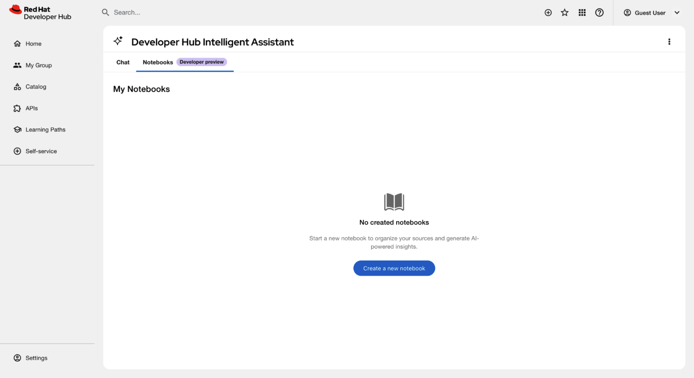
Developer Preview features are not supported by Red Hat in any way and are not functionally complete or production-ready. Do not use Developer Preview features for production or business-critical workloads. Developer Preview features provide early access to functionality in advance of possible inclusion in a Red Hat product offering. Customers can use these features to test functionality and provide feedback during the development process. Developer Preview features might not have any documentation, are subject to change or removal at any time, and have received limited testing. Red Hat might provide ways to submit feedback on Developer Preview features without an associated SLA.
For more information about the support scope of Red Hat Developer Preview features, see Developer Preview Support Scope.
8.1. Solve project-specific challenges
Configure Red Hat Developer Hub and Red Hat Developer Lightspeed for Red Hat Developer Hub to provide users with private, document-based AI workspaces.
Prerequisites
- A deployed instance of RHDH.
-
By using the OpenShift CLI (
oc), you have access, with developer permissions, to the OpenShift Container Platform cluster aimed at containing your Developer Hub instance. - A Lightspeed Stack service is running and accessible to the backend.
- A supported large language model (LLM), such as Granite 7B or higher, is available.
Procedure
Enable the notebook feature and define your model by adding the following configuration to your
app-config.yamlfile:lightspeed: notebooks: enabled: true queryDefaults: model: ${NOTEBOOKS_QUERY_MODEL} # Use the exact model name provider_id: ${NOTEBOOKS_QUERY_PROVIDER_ID}NoteIf the model name is wrong, an error message is displayed in the logs and the user interface.
Grant user access through role-based access control (RBAC) policies by defining permissions in your
rbac-policy-csvfile:Add the permission policies:
p, role:default/<your_team_name>, intelligent-assistant.notebooks, use, allowAssign the role to specific users:
g, user:default/<your_user_name>, role:default/<your_team_name>
- Apply the updated configuration and restart the service.
Verification
- Log in to RHDH using an account assigned to the RBAC role defined in the configuration.
- Confirm that the Notebooks tab is visible next to the Chat tab in the primary navigation bar.
- Click the Notebooks tab and ensure the My Notebooks dashboard loads without error messages.
8.2. Enable data persistence for Developer Lightspeed for RHDH Notebooks
To persist Notebook sessions, documents, and AI history across service restarts, you must configure the Notebooks storage backends to use persistent volumes.
By default, the service uses ephemeral storage in the /tmp directory, which the system clears during a pod restart.
Prerequisites
-
By using the OpenShift CLI (
oc), you have access, with developer permissions, to the OpenShift Container Platform cluster aimed at containing your Developer Hub instance. - You have authored and provisioned a custom config map for your deployment. For more information, see link:Provision your custom Red Hat Developer Hub configuration.
-
A Persistent Volume Claim (PVC) is provisioned in your cluster and mounted to the LCORE container (for example, at
/var/lib/lightspeed-data).
Procedure
Update your custom config map
llama-stack-configs/config.yamlfile to point thekv_notebooksstorage backend to your persistent mount point:spec: initContainers: - name: init-notebooks-dir # ... complete init container containers: - name: lightspeed-core image: quay.io/lightspeed-core/lightspeed-stack:0.5.1 ports: - containerPort: 8080 volumeMounts: - name: notebooks-storage mountPath: /var/lib/lightspeed-data - name: config # ← Added all ConfigMap mounts mountPath: /app-root/config.yaml subPath: config.yaml - name: lightspeed-config mountPath: /app-root/lightspeed-stack.yaml subPath: lightspeed-stack.yaml - name: profile mountPath: /app-root/rhdh-profile.py subPath: rhdh-profile.py livenessProbe: # ← Added health checks httpGet: path: /readiness port: 8080 readinessProbe: httpGet: path: /readiness port: 8080 volumes: # ← Added all volume definitions - name: notebooks-storage persistentVolumeClaim: claimName: lightspeed-notebooks-pvc - name: config configMap: name: llama-stack-config - name: lightspeed-config configMap: name: lightspeed-core-config - name: profile configMap: name: rhdh-profileUpdate your deployment manifest to include the init container, volume mounts, and volume definitions:
spec: template: spec: initContainers: - name: init-notebooks-storage image: registry.access.redhat.com/ubi9/ubi-minimal command: ["sh", "-c", "mkdir -p /var/lib/lightspeed-data/notebooks && chmod -R 777 /var/lib/lightspeed-data/notebooks"] volumeMounts: - name: lightspeed-notebooks mountPath: /var/lib/lightspeed-data containers: - name: lightspeed-stack image: quay.io/lightspeed-core/lightspeed-stack:0.5.1 ports: - containerPort: 8080 volumeMounts: - name: lightspeed-notebooks mountPath: /var/lib/lightspeed-data - name: config mountPath: /app-root/config.yaml subPath: config.yaml livenessProbe: httpGet: path: /readiness port: 8080 readinessProbe: httpGet: path: /readiness port: 8080 volumes: - name: lightspeed-notebooks persistentVolumeClaim: claimName: lightspeed-notebooks-pvc - name: config configMap: name: llama-stack-config- Apply the updated configuration and restart the service.
Verification
- In Red Hat Developer Hub, create a Notebook and upload a test document.
- Send a message to the virtual assistant and verify that the response is based on the document.
Restart the pod:
$ oc delete pod <pod_name>
- After the pod recovers, refresh the My Notebooks dashboard.
- Verify that the Notebook and the uploaded file are still accessible.
Chapter 9. Get AI-assisted help for your development tasks
Use Red Hat Developer Lightspeed for Red Hat Developer Hub, a generative AI assistant in Red Hat Developer Hub (RHDH), to ask platform questions, analyze logs, generate code, and create test plans from a chat interface.
9.1. Prerequisites
- Your platform engineer has configured the Developer Lightspeed for RHDH service in your RHDH instance.
9.2. Configure safety guards in Red Hat Developer Hub
To protect users from insecure or harmful AI model outputs, Red Hat Developer Hub (RHDH) uses Llama Guard as a default safety shield. You must configure these guards to align with your organization’s security policies.
Default safety guard configuration-
The system uses Llama Guard as the default safety shield. Override these settings in the
run.yamlfile.
The external_providers_dir parameter defaults to null and is no longer required in your configuration.
Overriding safety guards-
To implement custom security layers or different safety shields, you must define a new safety provider within a custom
run.yamlfile. Disabling safety guards-
To run RHDH without safety guards, you must use the
run-no-guard.yamlconfiguration file.
Running without safety guards increases the risk of invalid model output. Only use this configuration in secure development environments.
Applying the no-guard configuration- To run the system without a safety guard, perform these steps:
Procedure
Add the following YAML file as a config map to your namespace:
version: 2 image_name: redhat-ai-dev-llama-stack-no-guard apis: - agents - inference - safety - tool_runtime - vector_io - files container_image: external_providers_dir: providers: agents: - config: persistence: agent_state: namespace: agents backend: kv_default responses: table_name: responses backend: sql_default provider_id: meta-reference provider_type: inline::meta-reference inference: - provider_id: ${env.ENABLE_VLLM:+vllm} provider_type: remote::vllm config: url: ${env.VLLM_URL:=} api_token: ${env.VLLM_API_KEY:=} max_tokens: ${env.VLLM_MAX_TOKENS:=4096} tls_verify: ${env.VLLM_TLS_VERIFY:=true} - provider_id: ${env.ENABLE_OLLAMA:+ollama} provider_type: remote::ollama config: url: ${env.OLLAMA_URL:=http://localhost:11434} - provider_id: ${env.ENABLE_OPENAI:+openai} provider_type: remote::openai config: api_key: ${env.OPENAI_API_KEY:=} - provider_id: ${env.ENABLE_VERTEX_AI:+vertexai} provider_type: remote::vertexai config: project: ${env.VERTEX_AI_PROJECT:=} location: ${env.VERTEX_AI_LOCATION:=us-central1} - provider_id: sentence-transformers provider_type: inline::sentence-transformers config: {} tool_runtime: - provider_id: model-context-protocol provider_type: remote::model-context-protocol config: {} - provider_id: rag-runtime provider_type: inline::rag-runtime config: {} vector_io: - provider_id: faiss provider_type: inline::faiss config: persistence: namespace: vector_io::faiss backend: faiss_kv files: - provider_id: localfs provider_type: inline::localfs config: storage_dir: /tmp/llama-stack-files metadata_store: table_name: files_metadata backend: sql_files storage: backends: kv_default: type: kv_sqlite db_path: /tmp/kvstore.db sql_default: type: sql_sqlite db_path: /tmp/sql_store.db sql_files: type: sql_sqlite db_path: /rag-content/vector_db/rhdh_product_docs/1.9/files_metadata.db faiss_kv: type: kv_sqlite db_path: /rag-content/vector_db/rhdh_product_docs/1.9/faiss_store.db stores: metadata: namespace: registry backend: faiss_kv inference: table_name: inference_store backend: sql_default max_write_queue_size: 10000 num_writers: 4 conversations: table_name: openai_conversations backend: sql_default registered_resources: models: - model_id: sentence-transformers/all-mpnet-base-v2 metadata: embedding_dimension: 768 model_type: embedding provider_id: sentence-transformers provider_model_id: /rag-content/embeddings_model tool_groups: - provider_id: rag-runtime toolgroup_id: builtin::rag vector_dbs: - vector_db_id: rhdh-product-docs-1_8 embedding_model: sentence-transformers/all-mpnet-base-v2 embedding_dimension: 768 provider_id: faiss server: auth: host: port: 8321 quota: tls_cafile: tls_certfile: tls_keyfile:Mount the config map to your Llama Stack container at
/app-root/run.yamlto make sure it overrides the default image file:name: llama-stack volumeMounts: - mountPath: /app-root/run.yaml subPath: run.yaml name: llama-stack-config
Configure the required volume:
volumes: - name: llama-stack-config configMap: name: llama-stack-configwhere:
llama-stack-config- The config map where you added the new no-guard configuration file.
- Restart the deployment if it does not trigger an automatic rollout.
9.3. Best results for assistant queries
To resolve technical blockers and accelerate development tasks, you must structure your queries to give specific context to the AI assistant. Using precise prompts makes sure that Developer Lightspeed for RHDH generates relevant code snippets, architectural advice, or platform-specific instructions.
Use the following strategies to improve the accuracy of the assistant’s output during your development workflow:
- Specify technologies
- Instead of asking "How do I use templates?", ask "How do I create a Software Template that scaffolds a Node.js service with a CI/CD pipeline".
- Give context
- Include details about your environment, such as "I am deploying to OpenShift; how do I set up my catalog-info.yaml to show pod health?".
- Use conversation context
- Ask follow-up questions to refine an earlier answer. For example, if the assistant gives a code snippet, you can ask "Now rewrite that using TypeScript interfaces."
- Validate with citations
- Check the provided documentation links and citations in the response to verify that the generated advice aligns with your organization’s official standards.
- Improve assistant accuracy
- Rate the utility of responses by selecting the Thumbs up or Thumbs down icons. This feedback helps tune the model for your organization’s specific requirements.
To keep your data secure, do not include sensitive personal information, plain text credentials, or confidential business data in your queries.
9.4. AI response monitoring and context management
Developer Lightspeed for RHDH provides features to track the AI reasoning process and keep the context of your development tasks.
- Thinking cards
- An expandable thinking card is displayed while the AI processes a query. A pulse animation indicates the reasoning phase. You can expand the card to view detailed reasoning or collapse it to minimize screen clutter.
- Tool call transparency
- An expandable card displays details for Model Context Protocol (MCP) tool calls, which you can use to monitor background processes.
- Context-aware citations
- Retrieval-Augmented Generation (RAG) citations appear only when the AI uses internal documentation. This makes sure that general knowledge responses remain concise.
- Context preservation during model changes
- When you select a different AI model, Developer Lightspeed for RHDH starts a new conversation. This keeps your earlier chats available in your history.
- Structural readability
- The interface formats headings and bullet points automatically to make sure responses are scannable.
9.5. Manage chats
Manage your chat history and configuration in RHDH to organize your workspace, resume earlier tasks, or find past solutions.
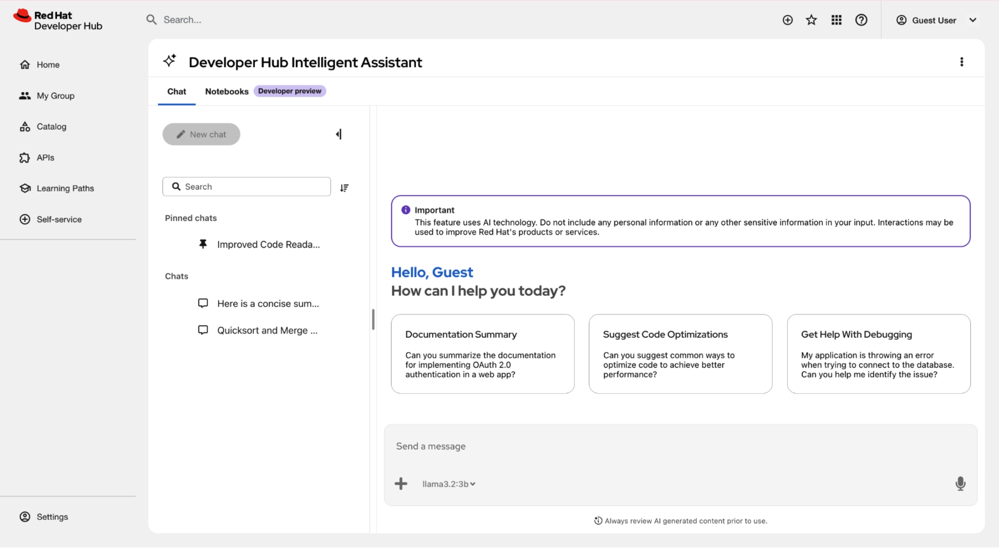
Prerequisites
- You have configured the Developer Lightspeed for RHDH plugin in Red Hat Developer Hub.
- You have logged in to the portal.
Procedure
- Click the Intelligent Assistant button at the lower right of the screen to open the chat overlay.
Optional: Configure the interface display and server settings:
- Click the Chatbot options icon (⋮) to view chat history or start a new chat.
Click the Display mode icon and select any of the following views:
Overlay: A floating window is displayed over the current page content.
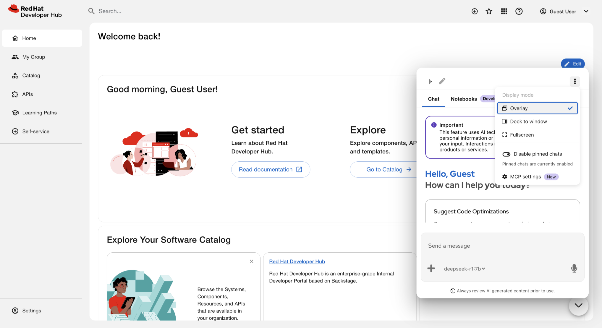
Dock to window: A panel attaches to the right side of the screen. Activating this mode automatically closes the quick start panel if it is already open.
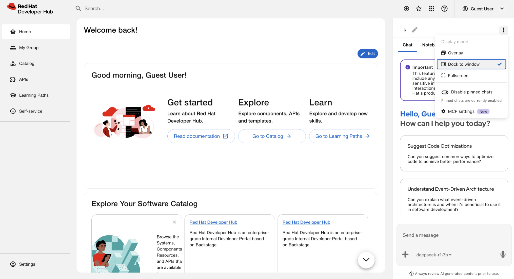
Fullscreen: A dedicated page opens for intensive chat sessions. This mode displays a revised header containing the Lightspeed logo and a horizontal tab bar, which replaces the previous main menu. Bookmark the URL in your browser to save a direct link to the chat interface.
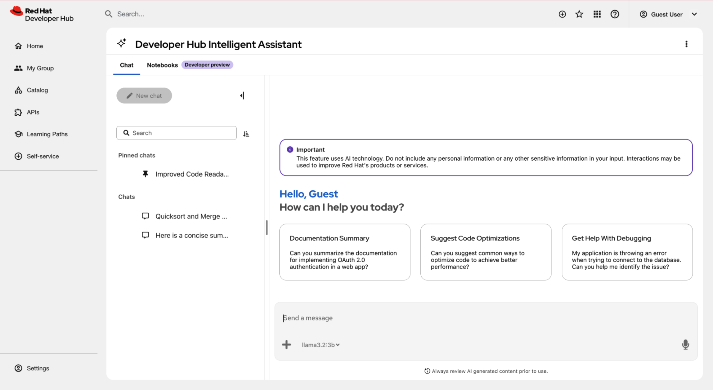
- Optional: Toggle Enable pinned chats/Disable pinned chats to enable or hide the pinned chats. The system enables this option by default.
Available only if MCP is configured: Manage Model Context Protocol connections.
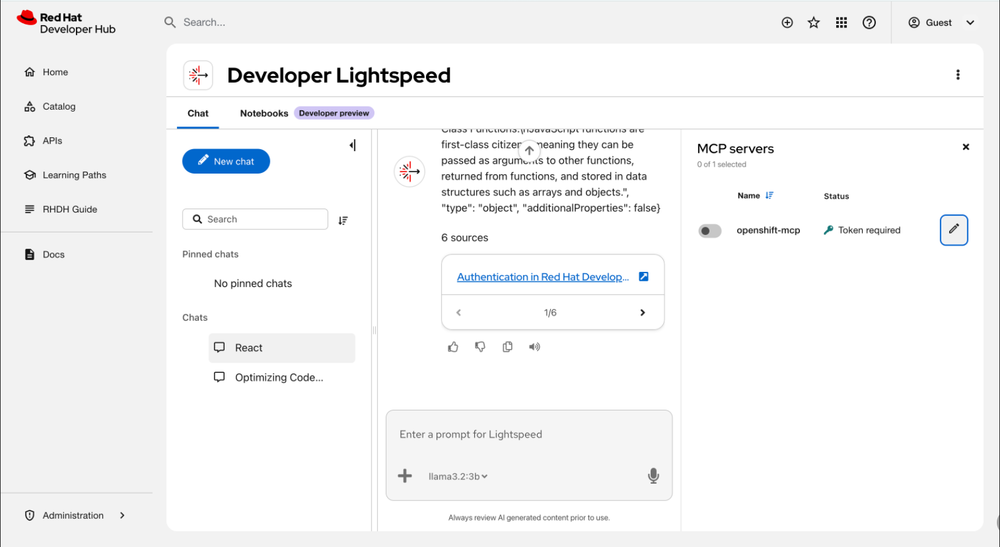
Start a chat or load an earlier session:
- Enter a prompt: Type a query in the Enter a prompt for Lightspeed chat field and press Enter.
- Use a sample: Click a prompt tile.
Change the AI model: Select a model from the model selector dropdown menu inside the prompt bar.
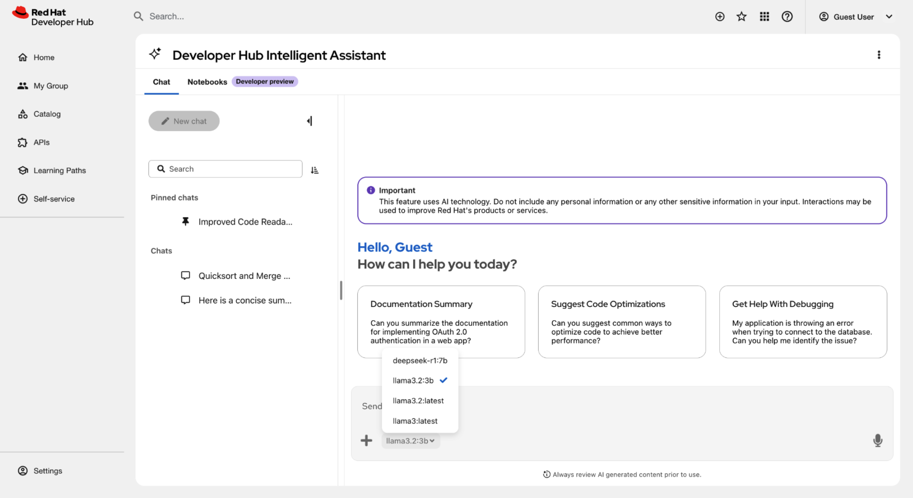
Attach a file: Click the (
+) icon on the left of the prompt bar to upload a.yaml,.json, or.txtfile. Descriptive text clarifies the function of the icon.- Click the file name to open the preview model.
View or edit the content of the file:
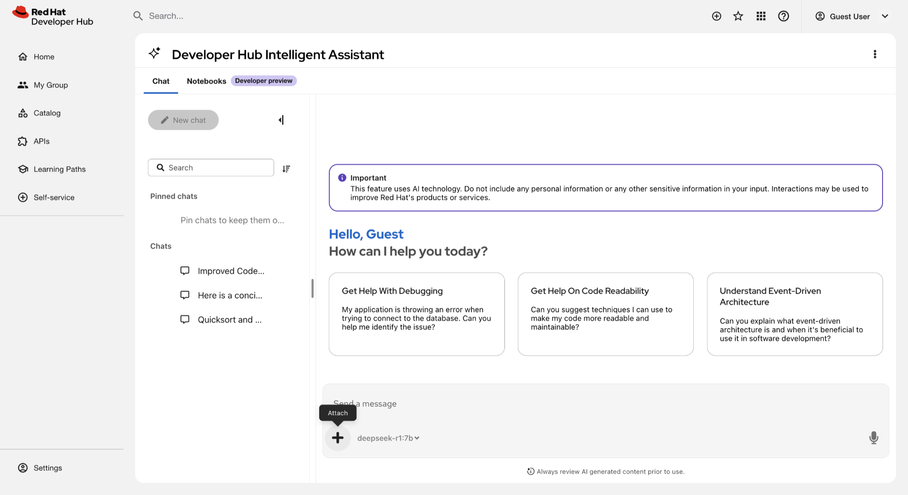
- Use voice: Click the Use microphone icon. The microphone and send buttons are located on the right side of the prompt bar.
Control AI generation: Use the control buttons on the right side of the prompt bar. Click the start/send (
>) button to submit queries, or click the stop ([]) button to halt AI generation.- Resume a chat: Select a title from the Recent list.
Organize your chat history:
Start a new topic: Click New chat to reset the assistant’s context. When the history panel is collapsed, you must click the Edit square icon to create a new chat.
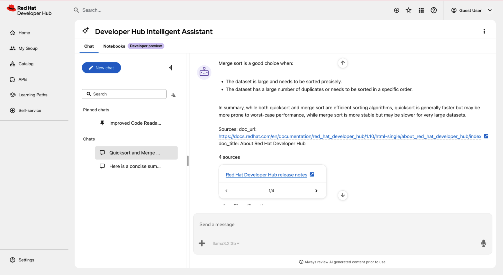
- Search history: Enter a keyword in the Search field.
Rename a session: Click Options next to a chat title, select Rename, and enter a new name.
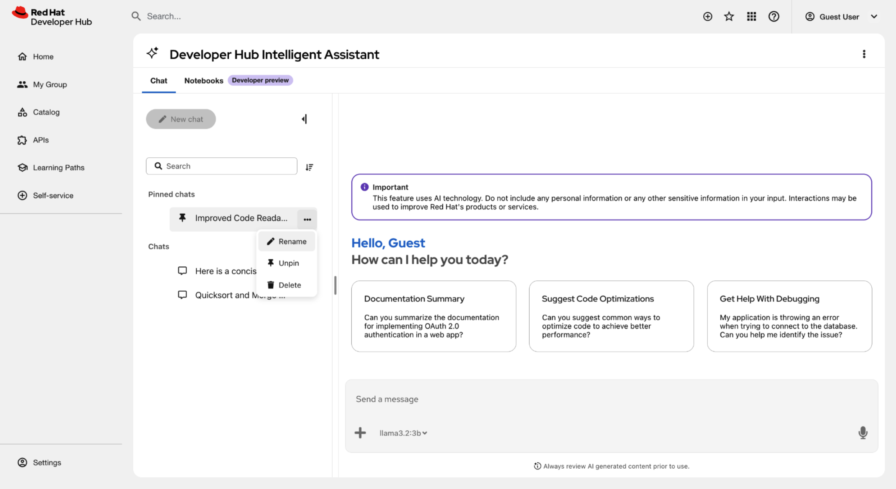
- Pin a chat: Click Options next to a chat title and select Pin. The chat moves to the Pinned group.
Sort chats: Click Sort control and choose a sorting criteria, such as Date (Newest first).
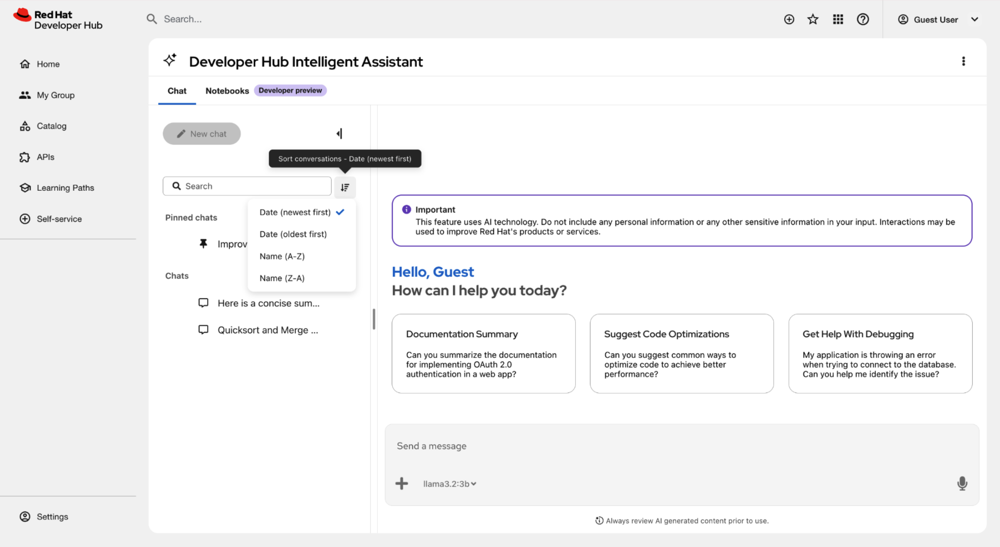
Delete a chat: Click Options next to a chat title and select Delete.
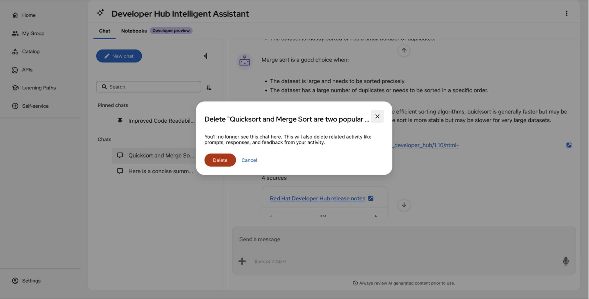
Expand or collapse the panel: Click the Expand/collapse icon to toggle the history panel.
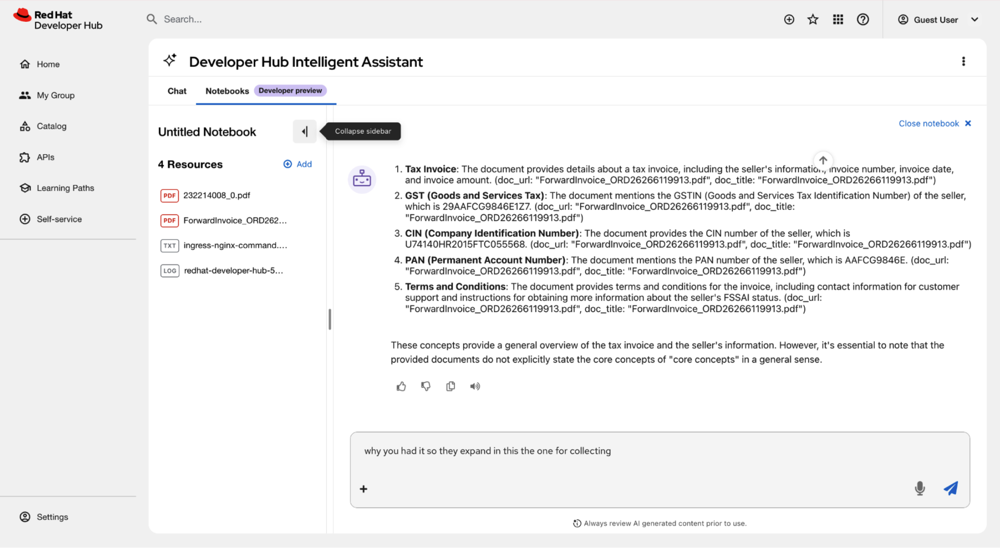
NoteThe expanded panel is resizable up to a defined maximum width.
- Optional: To hide the interface, if you are in the Overlay or Dock to window mode, click the Close Lightspeed icon (X) to hide the window. If you are in Fullscreen mode, revert to the other modes and click the Close Lightspeed icon (X). The system preserves your active query and history.
- Optional: In Fullscreen mode, bookmark the URL in your browser to save a direct link to the chat interface.
Verification
- The main window displays the active chat or selected history.
- The chat history list reflects renamed, pinned, or deleted entries.
9.6. Build a private knowledge base with Developer Lightspeed for RHDH Notebooks
Use Developer Lightspeed for RHDH notebooks to create isolated research environments. These workspaces allow you to analyze project data securely by using a large language model (LLM) grounded in your specific documentation.
Developer Preview features are not supported by Red Hat in any way and are not functionally complete or production-ready. Do not use Developer Preview features for production or business-critical workloads. Developer Preview features provide early access to functionality in advance of possible inclusion in a Red Hat product offering. Customers can use these features to test functionality and provide feedback during the development process. Developer Preview features might not have any documentation, are subject to change or removal at any time, and have received limited testing. Red Hat might provide ways to submit feedback on Developer Preview features without an associated SLA.
For more information about the support scope of Red Hat Developer Preview features, see Developer Preview Support Scope.
9.6.1. Create isolated research workspaces
Organize your work into individual notebook sessions to keep research topics separate and private.
Procedure
- In the RHDH interface, click the Intelligent Assistant button.
- In your Developer Lightspeed for RHDH page, select the Notebooks tab.
- Click Create a new notebook to start a new workspace.
Optional: To manage your workspaces, click the More options icon on a notebook card to Rename, Delete, or add Tags to the session.
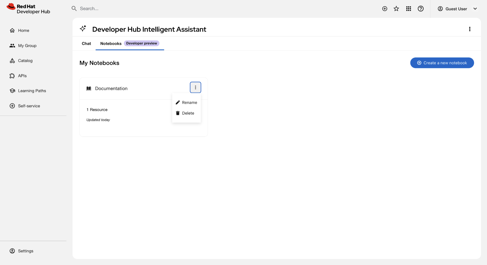
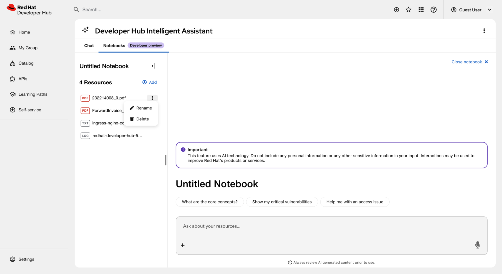
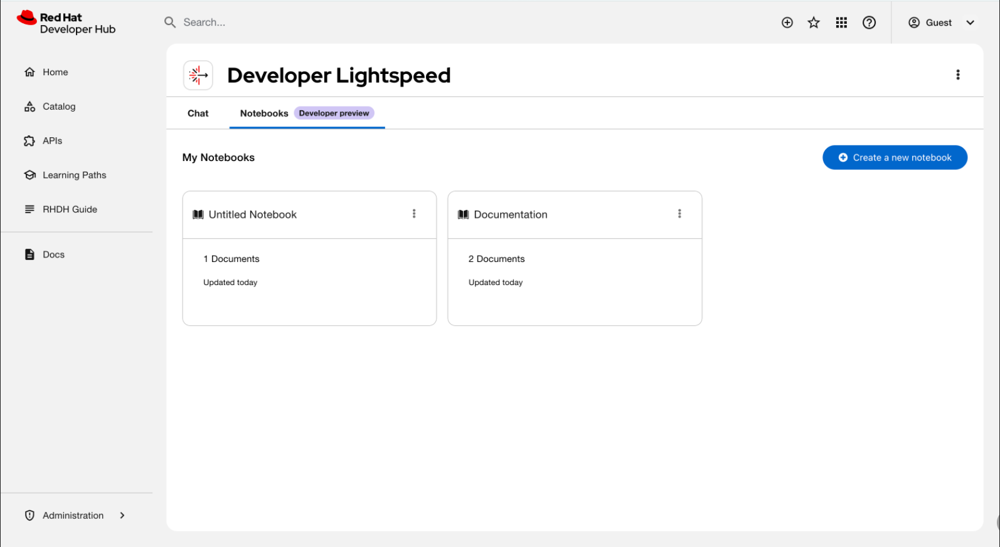
Verification
- Confirm the new notebook card appears on the My Notebooks dashboard.
9.6.2. Provide project context to the AI
To receive answers tailored to your project, upload and manage relevant source material in your active session.
Procedure
- Open a Notebook card from the dashboard.
Add resources by using one of the following methods:
- In the sidebar, click the Add (+) icon.
In the main user interface, click Upload a resource.
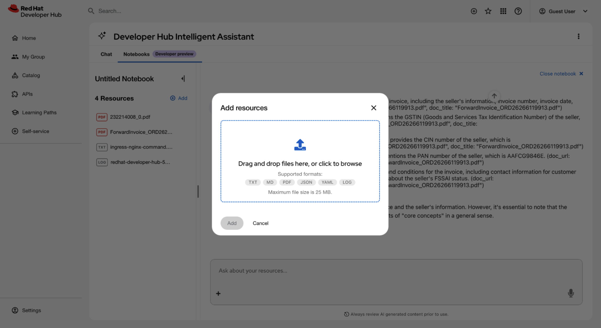
-
Select and upload your local files. Supported formats include
.txt,.md,.pdf,.docx,.log,.yaml, and.json. Adhere to the following constraints:
File size- Individual files or URL content must be 20MB or smaller.
Notebook Capacity- The total token count per session must not exceed 100k.
Unsupported content- Avoid scanned PDF images without text, audio, video, and general image files.
Persistence requirement- The internal SQL and KV stores must be mapped to a persistent backend to maintain the 100k token context across sessions.
- Wait for the system to process and vectorize the files. This might take several seconds for larger PDFs.
Verification
-
Ensure the uploaded files appear in the Resources list in the sidebar with a
Processedstatus.
9.6.3. Extract and verify document-based insights
After providing context, use the AI to perform reasoning across your files and verify the accuracy of the responses.
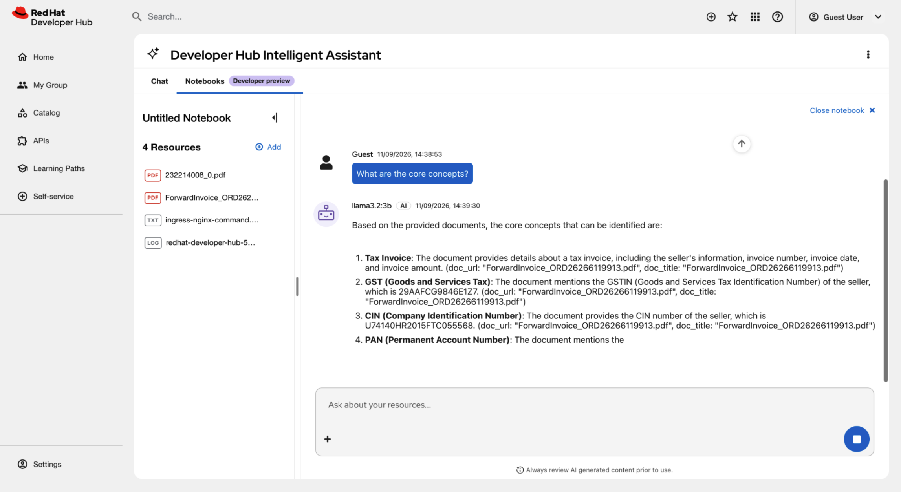
Prerequisites
You have uploaded documents or URLs to the active chat session to establish context.
NoteIf no documents are uploaded, you cannot communicate with the AI.
Procedure
- Enter a question in the prompt bar at the bottom of the screen.
- Analyze the response. The AI identifies relationships across all uploaded documents and URLs in the session.
- To verify accuracy, click the Sources chip to view the specific document excerpts used to generate the answer.
- Manage your workflow by using the history panel in the sidebar to expand or collapse previous interactions.
Verification
- Confirm that the Sources panel displays the correct filenames and text snippets corresponding to the AI’s response.
Chapter 10. AI model evaluation data to select the right AI model
Use the Red Hat Developer Lightspeed for Red Hat Developer Hub evaluation framework to validate the performance, accuracy, and reliability of Developer Lightspeed for RHDH.
With this automated toolset, you can measure how effectively various large language models (LLMs) answer questions based on Red Hat Developer Hub documentation.
Table 10.1. Components of the evaluation framework
| Component | Description |
|---|---|
|
Evaluation framework |
Contains the core logic and scripts used to run evaluations. |
|
Datasets |
Includes the input files used to test the model. |
|
Evaluation metrics integration |
Provides scoring through various metrics, including Ragas, DeepEval, and custom metrics. Ragas is the primary metric used to validate Developer Lightspeed for RHDH performance. |
10.1. Configure the evaluation environment to validate model accuracy
Set up the evaluation environment to validate the performance and accuracy of Developer Lightspeed for RHDH. Configure this evaluation to ensure the model correctly interprets documentation and provides dependable answers.
Developer Preview features are not supported by Red Hat in any way and are not functionally complete or production-ready. Do not use Developer Preview features for production or business-critical workloads. Developer Preview features provide early access to functionality in advance of possible inclusion in a Red Hat product offering. Customers can use these features to test functionality and provide feedback during the development process. Developer Preview features might not have any documentation, are subject to change or removal at any time, and have received limited testing. Red Hat might provide ways to submit feedback on Developer Preview features without an associated SLA.
For more information about the support scope of Red Hat Developer Preview features, see Developer Preview Support Scope.
By performing these evaluations, you minimize the risk of the model delivering incorrect or hallucinated information to users in production.
Prerequisites
- Install uv for Python package management (Python 3.11 or later).
Procedure
Clone the evaluation repository and navigate to the directory:
git clone https://github.com/lightspeed-core/lightspeed-evaluation cd lightspeed-evaluation
Synchronize the environment and install dependencies:
uv sync
Configure the environment variables for the judge LLM. You can create a
.envfile in the root directory or export the keys directly to your terminal.If you use Gemini, you must set the Gemini API key:
export GEMINI_API_KEY="your-google-api-key"
If you use OpenAI, you must set the OpenAI API key:
export OPENAI_API_KEY="your-key"
Optional: If you test with a live service, set your Developer Lightspeed for RHDH service API key:
export API_KEY="your-lightspeed-service-key"
Verification
Verify that the environment is synchronized and the virtual environment is active:
uv run python --version
The output must return Python 3.11 or later.
10.2. Prepare evaluation datasets to verify AI-generated responses
Prepare evaluation data sets to test the performance of Developer Lightspeed for RHDH. You can use pre-generated AI data sets for specific Red Hat Developer Hub releases or generate custom AI data sets from your own documentation.
Prerequisites
- You must clone the evaluation repository to your local machine.
Procedure
Download pre-generated data sets: Use this method to test the performance of specific RHDH releases. These data sets are generated using Ragas testset generation for RAG.
- In your terminal, navigate to the /dataset folder in the evaluation repository.
-
Locate the
.evaluation_dataset_yamlfiles. These files are pre-configured for the evaluation tool. To test a historical release, switch to the corresponding branch.
For example, to access the Red Hat Developer Hub 1.8 data set, switch to the
1.8branch.ImportantThe
mainbranch contains work-in-progress (WIP) data sets. Avoid using this branch for stable evaluations.
Generate custom data sets: Use this method to create a new test set from your own technical documentation.
- Generate a diverse set of question-and-answer (Q&A) pairs by following the Ragas test data generation documentation.
- Ensure your Q&A pairs match the required format by reviewing the evaluation data structure configuration.
Verification
- Verify that your custom data set matches the required schema before you start the evaluation run.
10.3. Run performance tests to ensure AI response reliability
Use the evaluation framework to run performance tests in either static mode to evaluate pre-recorded responses or dynamic mode to call a live service.
These evaluations identify performance gaps, allow you to compare different large language models (LLMs), and ensure that Developer Lightspeed for RHDH provides reliable information to users.
Prerequisites
- You must install and configure the evaluation environment.
- You must prepare an evaluation data set.
Procedure
-
Download the
system.yamlconfiguration template from the repository. Configure the parameters in the
system.yamlfile based on your evaluation mode:Field Description llmDefines the judge LLM that scores the responses, such as
gemini-2.5-pro.api.enabledSet to
falsefor static mode to use pre-filled data. Set totruefor dynamic mode to call a live service.api.api_base(Required for dynamic mode only) Provide the URL of your Developer Lightspeed for RHDH service.
api.endpoint_typeSpecify the service configuration type:
streamingorquery.Execute the evaluation by using the
lightspeed-evalcommand:lightspeed-eval \ --system-config config/system.yaml \ --eval-data config/evaluation_data.yaml \ --output-dir ./my_evaluation_results
Verification
- Navigate to the specified output directory and verify that the generated reports contain the model performance scores.
10.4. Analyze evaluation results to identify performance gaps
Determine the performance of Developer Lightspeed for RHDH and identify documentation areas that require model improvement by analyzing evaluation results in the repository. You can use these reports to compare performance across different large language models (LLMs) and topics.
Prerequisites
-
You must have access to the
developer-lightspeed-evaluationrepository.
Procedure
-
In the root of the repository, navigate to the version-specific folder within the
/evaluation-resultdirectory. Open the following files to evaluate performance:
- Model Pass Rate: Compare the overall performance between different LLMs.
- Topic Pass Rate: Identify performance trends and gaps within specific documentation areas.
Verification
- Verify that the reports display data visualizations or metrics consistent with your recent evaluation run.
10.5. Evaluation metrics and historical data reference
Use the available metrics to evaluate the performance of Developer Lightspeed for RHDH at the conversation turn level.
These metrics provide a standardized way to measure the accuracy and reliability of the generated responses and the retrieved content.
| Metric | Description |
|---|---|
|
|
Measures how well the answer is derived solely from the retrieved context. |
|
|
Measures whether the retrieved context contains all information required to answer the question. |
|
|
Verifies if the retrieved documentation chunks are relevant to the user query. |
|
|
Measures the ratio of useful information within the retrieved documentation chunks. |
|
|
Compares the generated response against the expected ground-truth response. This custom metric is implemented in the evaluation tool. |
10.6. Release report and historical data
Use the latest Q&A data set and evaluation results to monitor the current performance of Developer Lightspeed for RHDH.
Access version-specific branches that contain the data sets and evaluation results required to track improvements or regressions across product releases.
The main branch contains work-in-progress data for versions currently under development. For stable evaluations or historical tracking, you must switch to the branch associated with a specific release.
| Release version | Branch name | Data included |
|---|---|---|
|
Latest stable |
Most recent version branch |
The current question and answer (Q&A) data set and evaluation results. |
|
Historical |
Previous version branches |
Data sets and evaluation results for previous releases to track regressions. |
Chapter 11. Appendix: LLM requirements
Review large language model (LLM) provider compatibility and system requirements for OpenAI, Red Hat OpenShift AI, Ollama, vLLM, and Vertex AI to plan your Developer Lightspeed for RHDH infrastructure deployment.
11.1. Large language model (LLM) requirements
To plan your Developer Lightspeed for RHDH deployment, you must determine which compatible large language model (LLM) inference provider fits your infrastructure.
Developer Lightspeed for RHDH operates on a Bring Your Own Model (BYOM) architecture. Because the service does not include a native model, you must connect a compatible inference provider during installation.
The underlying LCORE service integrates with platforms that support either the OpenAI API specification or the vLLM inference engine. Developer Lightspeed for RHDH supports the following inference provider configurations:
- OpenAI: Cloud-based inference services.
- vLLM: Enterprise inference servers, which include models hosted on Red Hat OpenShift AI and Red Hat Enterprise Linux AI.
- Ollama: Desktop inference servers.
- Gemini: Services through Vertex AI.
When configuring your deployment, you must account for the following provider behaviors:
- Red Hat OpenShift AI routing: Because the configuration lacks an explicit Red Hat OpenShift AI provider option, you must route these deployments through the vLLM provider settings.
-
vLLM URL syntax: The
vllmprovider type communicates with endpoints that conform to the OpenAI API schema. You must manually append/v1to the configured provider URL because the system does not add it automatically. This configuration also applies to other hosted, OpenAI-compliant inference providers.
11.2. OpenAI model integration for your deployment
Use OpenAI models to provide generative artificial intelligence (AI) inference services, such as GPT 5, for your Developer Lightspeed for RHDH deployment.
The system connects directly to the OpenAI API platform to route user prompts and return model insights. To configure this large language model (LLM) provider, you must have an active API key generated from your OpenAI developer account.
Additional resources
11.3. Ollama model integration requirements
To integrate the open-source Ollama framework with Developer Lightspeed for RHDH, you must ensure that your network topology allows the Developer Lightspeed for RHDH service to route traffic to the Ollama server endpoint.
The Ollama server operates as a containerized layer, providing a command-line interface (CLI) to download, manage, and execute open-source models such as Llama 3 and Mistral. You can deploy Ollama on both local workstations and cluster environments.
However, a cluster-deployed Developer Lightspeed for RHDH instance cannot access an Ollama server that runs exclusively on a workstation localhost interface. For cluster deployments, the Ollama server must reside on an externally accessible network perimeter or run directly inside the cluster.
The following integration configurations are supported:
- Both Developer Lightspeed for RHDH and Ollama deploy on a local workstation.
- Developer Lightspeed for RHDH deploys locally and connects to an externally accessible cluster Ollama server.
- Both Developer Lightspeed for RHDH and Ollama deploy inside the cluster infrastructure.
Additional resources
11.4. vLLM model integration for high-throughput inference
Use the open-source vLLM high-throughput serving framework to optimize memory utilization and manage high volumes of concurrent requests for your Developer Lightspeed for RHDH deployment.
The vLLM framework operates as an enterprise inference server that optimizes memory allocation to maximize the processing efficiency of large language models (LLMs). Integrating vLLM ensures that your environment maintains high performance and responsiveness under heavy concurrent user traffic.
Additional resources
11.5. Vertex AI integration for Gemini models
To use Gemini models with Developer Lightspeed for RHDH, you can configure Google Cloud Vertex AI to act as your managed large language model (LLM) inference provider.
The underlying LCORE service connects to Vertex AI to access hosted Gemini models. This integration provides Developer Lightspeed for RHDH with enterprise-grade language processing and chat assistance capabilities without requiring you to maintain a local inference server.
Additional resources
Chapter 12. Appendix: Manage user data security
Review data handling practices, feedback storage protocols, and model configuration architectures, such as the Bring Your Own Model approach, to evaluate and enforce information security standards for your organization.
12.1. Manage user data security
Review data routing and privacy practices to evaluate how Developer Lightspeed for RHDH handles chat messages and operational information transmitted to large language model (LLM) providers.
Developer Lightspeed for RHDH sends your chat messages directly to your configured large language model (LLM) provider. Because these messages can contain sensitive operational data regarding your cluster, users, or business environment, ensure that your provider compliance policies align with your organizational security standards.
Developer Lightspeed for RHDH has limited capabilities to filter or redact the information you submit during user interactions. To mitigate data exposure risks, do not enter proprietary or confidential information into Developer Lightspeed for RHDH. To encourage user compliance, Developer Lightspeed for RHDH displays a mandatory warning at the start of each sessions, reminding users to omit personal or sensitive details.
12.2. User feedback collection
Review how Developer Lightspeed for RHDH collects and isolates user feedback data within your cluster to manage local storage requirements and data privacy standards.
Developer Lightspeed for RHDH saves user feedback submissions, including numerical ratings and text commentary, locally within the pod filesystem. Because Red Hat does not collect, access, or transmit this data, local platform administrators must manage and monitor these storage directories.
12.3. Bring Your Own Model integration
Review Bring Your Own Model (BYOM) requirements to select and integrate an OpenAI API-compatible inference service with Lightspeed Core Service.
Developer Lightspeed for RHDH relies on a BYOM architecture that let you connect the Lightspeed Core Service (LCORE) layer to any OpenAI API-compatible inference platforms. To establish connection compatibility, your chosen inference service must satisfy the following technical criteria:
- The service must conform to the OpenAI API specification for chat completions.
- The host environment must match the specified infrastructure configuration and installation instructions.
Various commercial and open-source inference services support the OpenAI API specification. Because operational costs, performance metrics, and data security controls vary by provider, you must evaluate and test prospective platforms locally to select the service that best meets your organizational requirements.
Additional resources
12.4. Your compliance and data-sharing responsibility
Review compliance requirements and data-sharing responsibilities to ensure that user interactions with Developer Lightspeed for RHDH align with your organization’s data privacy policies.
All data that users submit through prompts and responses within Developer Lightspeed for RHDH is transmitted directly to your configured large language model (LLM) inference service. Platform administrators must ensure that these external data transfers comply with corporate security standards, governance frameworks, and local data protection policies.